Marxism-Leninism-Maoism News
马列毛主义新闻
[This lan. PDF][This lan. ODT][This lan. MD][This lan. TXT][This lan. TXT LIST]
Please select your language 请选择你的语言:
Origin | 中文 | English
Samba Roda Online - Tribute to Luiz Carlos da Vila - The New Democracy
Author: Rosa Minine
Description: The Batuq Casa do Samba bar has been performing a face -to -face show series and made them available on its YouTube channel. Among them is the samba wheel
Publish Time: 2023-02-19T00:05:00-03:00
Modified Time: None
Updated Time: None
Images: ['ChoroDas3D20Fev.png']
Section: Agenda Cultural
Tags: ['Agenda Cultural', 'Batuq Casa do Samba', 'compositor', 'Luiz Carlos da Vila', 'Youtube']
Type: article
 Bar Batuq Casa do Samba has been performing a series of presential show edisponibilized them on your YouTube channel. Among them is the wardees and luiz Carlos da Vila "a singing at will" , a tribute to the company and sambista Luiz Carlos da Vila **(1949 - 2008).
Bar Batuq Casa do Samba has been performing a series of presential show edisponibilized them on your YouTube channel. Among them is the wardees and luiz Carlos da Vila "a singing at will" , a tribute to the company and sambista Luiz Carlos da Vila **(1949 - 2008).
Endereço do Batuq Casa do Samba: rua Belizário Pena, 1141, Penha, Rio deJaneiro/RJ.
Abaixo: O vídeo
News Source: https://anovademocracia.com.br/roda-de-samba-online-homenagem-a-luiz-carlos-da-vila/
Naxalite Squadron Raids Road Construction Site In Kanker District
Author: Alan Warsaw
Publish Time: 2023-02-19T05:05:43+00:00
Update Time: 2023-02-19T18:06:24+00:00
Images: ['13342_l-800x445.jpg']
Tags: ['Bastar', 'Bastar District', 'Bastar Division', 'Bastar Region', 'Chhattisgarh', 'CPI (maoist)', 'CPI(maoist)', 'India', 'Kanker District', 'Naxal', 'naxalites', 'naxals', 'police', 'PPW in India', 'Raipur', 'Raipur District']
Categories: ['India', "People's War"]
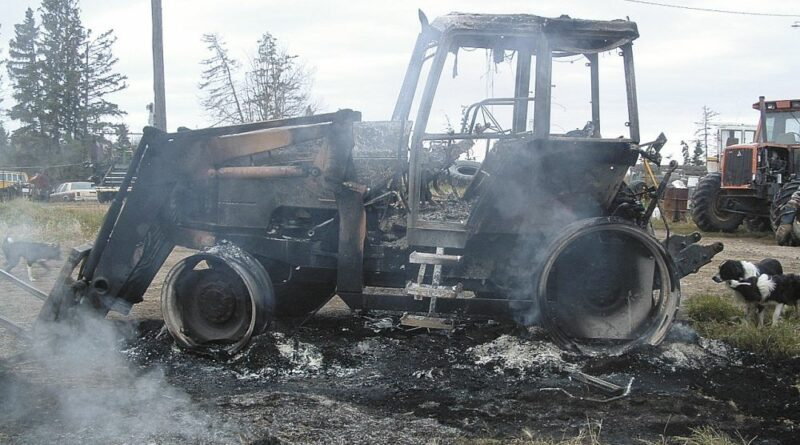
Kanker District, February 19, 2023: A squadron of Naxalites have set blazethree machines engaged in road construction work in Chhattisgarh's Kankerdistrict, police said on Sunday.
No one was injured in the raid which took place on Saturday evening betweenKamteda and Gattakal villages under Partapur police station limits, about 200km from the State capital Raipur, Additional Superintendent of Police(Pakhanjur)Dhirendra Patel said.
The road construction work was being carried out under the Prime Minister GramSadak Yojna.
According to preliminary information, a group of armed Naxalites, clad inuniform, stormed the construction site, ordered the workers to stop the workand confiscated their mobile phones, the official said.
The Naxalites then set ablaze two earth-moving machines and a mixture machineand fled, he said.
Soon after being alerted, a police team was sent to the spot, Mr. Patel said,adding a search operation was underway there to trace the Naxals responsiblefor the raid.
Naxalites have frequently attempted to disrupt road construction works inChhattisgarh's Bastar division, which consists of seven districts includingKanker, by launching attacks on security forces and damaging the roads,vehicles and machines used in the work, according to police.
Source : https://www.thehindu.com/news/national/other-states/naxalites-> torch-3-machines-engaged-in-road-construction-work-in-> chhattisgarh/article66528290.ece
News Source: https://www.redspark.nu/en/peoples-war/naxalite-squadron-raids-road-construction-site-in-kanker-district/
Comrades from the Bulgarian Workers' and Peasants' Party signs the declaration LET'S DEVELOP THE REVOLUTIONARY STRUGGLE AGAINST THE IMPERIALIST WORLD WAR PREPARATIONS!
Author: maoistroad
Description: None
Time: 2023-02-19T10:45:00-08:00
Images: []
News Source: https://maoistroad.blogspot.com/2023/02/comrades-from-bulgarian-workers-and.html
The world's richest 1% earns nearly twice as much as the rest of the world together
Author: Tjen Folket Media
Description: Since 2020, the richest percentage of the world's population has earned almost two -thirds of the $ 42 trillion Verids created during the period. This is reported by the Oxfam organization in its report for J…
Publish Time: 2023-02-19T12:20:37+00:00
Modified Time: 2023-02-20T21:01:54+00:00
Images: ['fattigdom1-1160x721.jpg']
Tags: None
Category: 'Internasjonalt'
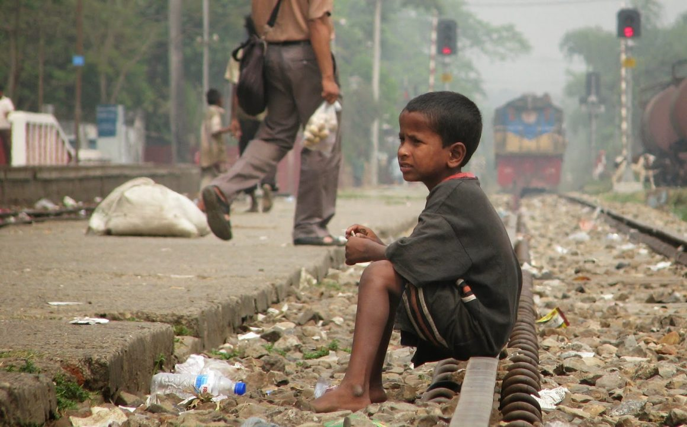
*
By a commentator for the Earn Folket Media.
Since 2020, the richest percentage of the world's population has earned the near -thirds of the $ 42 trillion values created during the period. This is the organization Oxfam in its report for January 2023. This is an increase at the top of already record high levels of accumulation. This "normal level" was that the upper percentage earned half. The report adds advances that can really make one look red considering the world situation today. It is further submitted in the report that billionaire wealth is growing 2.7million dollars a day. For every dollar one of the lowest 90%, Håveren a billionaire earns $ 1.7 million.
The report calculates that over 50% of inflation in Australia, the United States and European Comes of Company's profit maximization. This inflation is already running downhill to over 1.7 billion worldwide, which is more than the population of India. The World Bank has admitted that the progress towards their goal of wiping out extreme poverty has stopped. Increasing food prices and power crisis that rage in many countries have also benefited the billionaires.
The pandemic has been strong headwinds for many of the super rich. In many countries, public funds pumped into the economy, which raised the prices and thus the wealth of the richest. This is at the same time as millions of people have the losing of the Coronavirus.
The report calculates that over the next five years, three -quarters will be sharply tightened their budgets. The cuts are calculated to $ 7.8billions combined.
This is after a wave of tax cuts over many of the countries above the above. Only 4 per cent of each tax crown comes from wealth taxes. Half of the world's billionaires live in countries without inheritance tax or fee.This is capitalism, which today is in its second and final stage, imperialism. Imperialism is dying and rotting capitalism, and further napkin now that it is in a deep stage of decay. But we know that everything goes through a process of birth and death. The new one is born and the old door. Imperialism is dying, and the perverse misery we see is taking place is an expression for just that. Imperialism goes towards the cliff, and it has no road bake. The poor are the ones who are most disposed of to rebel. We know that capitalism has, in the working class, created its own trackmen. The seeking and immersive poverty will only speed up its downfall.
Reference Survival of the Richest - Oxfam
News Source: https://tjen-folket.no/index.php/2023/02/19/verdens-rikeste-1-tjener-naer-dobbelt-sa-mye-som-resten-av-verden-tilsammen/
Suriname: People rebel and invade Parliament against IMF measures
Author: Giovanna Maria
Description: On February 17, masses protesting against misery and famine rebelled in the capital of the South American country, Paramaribo, and invaded Parliament.
Publish Time: 2023-02-19T16:54:54-03:00
Modified Time: 2023-02-20T13:01:05-03:00
Updated Time: 2023-02-20T13:01:05-03:00
Images: ['Protesters-break-into-the-Suriname-Parliament-building-News.jpg', 'svg+xml;base64,PHN2ZyB4bWxucz0iaHR0cDovL3d3dy53My5vcmcvMjAwMC9zdmciIHdpZHRoPSIxMDk4IiBoZWlnaHQ9IjczMiIgdmlld0JveD0iMCAwIDEwOTggNzMyIj48cmVjdCB3aWR0aD0iMTAwJSIgaGVpZ2h0PSIxMDAlIiBzdHlsZT0iZmlsbDojY2ZkNGRiO2ZpbGwtb3BhY2l0eTogMC4xOyIvPjwvc3ZnPg==', 'svg+xml;base64,PHN2ZyB4bWxucz0iaHR0cDovL3d3dy53My5vcmcvMjAwMC9zdmciIHdpZHRoPSI5MDAiIGhlaWdodD0iNTA2IiB2aWV3Qm94PSIwIDAgOTAwIDUwNiI+PHJlY3Qgd2lkdGg9IjEwMCUiIGhlaWdodD0iMTAwJSIgc3R5bGU9ImZpbGw6I2NmZDRkYjtmaWxsLW9wYWNpdHk6IDAuMTsiLz48L3N2Zz4=', 'svg+xml;base64,PHN2ZyB4bWxucz0iaHR0cDovL3d3dy53My5vcmcvMjAwMC9zdmciIHdpZHRoPSIxMjAwIiBoZWlnaHQ9IjY3NSIgdmlld0JveD0iMCAwIDEyMDAgNjc1Ij48cmVjdCB3aWR0aD0iMTAwJSIgaGVpZ2h0PSIxMDAlIiBzdHlsZT0iZmlsbDojY2ZkNGRiO2ZpbGwtb3BhY2l0eTogMC4xOyIvPjwvc3ZnPg==']
Section: América Latina
Tags: ['fmi', 'Luta Classista', 'Protestos']
Type: article
 On February 17, masses protesting against misery and famine rebelled in the capital of the South American country, Paramaribo, and invaded opponent. The demonstrations began against the austerity measures applied by the sales government of Chan Santokhi, which ended up with subsidies to electricity, gasoline and others. The purpose of the measures is to comply with a billionaire with the international monetary fund(FMI). O país éconsiderado o menor da América Latina, com uma população de 610 mil pessoas eseu povo sofre com uma alta inflação.
On February 17, masses protesting against misery and famine rebelled in the capital of the South American country, Paramaribo, and invaded opponent. The demonstrations began against the austerity measures applied by the sales government of Chan Santokhi, which ended up with subsidies to electricity, gasoline and others. The purpose of the measures is to comply with a billionaire with the international monetary fund(FMI). O país éconsiderado o menor da América Latina, com uma população de 610 mil pessoas eseu povo sofre com uma alta inflação.
A rebelião popular ocorre em seguida a uma greve geral de dois dias detrabalhadores de todo o país em defesa dos seus direitos e contra os saláriosde miséria. No ano de 2022, a inflação no país foi de pelo menos 54%.
 Protesters Protece in Paramaribo against anti-sumped measures imposed by the IMF. Photo: AFP
Protesters Protece in Paramaribo against anti-sumped measures imposed by the IMF. Photo: AFP
In the protest of 17/02, about 2,000 people gathered in the morning at Centroda Capital Paramaribo to protest against the increase in prices, gasoline and electricity, as well as a new tax on Ocomércio and Small Business. In fury against the government of Chan Santokhi, Opovo advanced against Parliament with bottles and stones, breaking the cordialial cord on the spot. The forces of repression tried in vain to contain the rebellion of the masses against misery, which took to the city downtown streets, confiscated stores with basic products, and set fire to the agovernno linked buildings.
 People in the National Assembly during a protest against the Charestia Emparamaribo, Suriname. Photo: Ranu Abhelakh/AFP"I can no longer pay the gasoline to go to work and take my children to the school," said Alfred, another protester, who didn't mean his own name either.
People in the National Assembly during a protest against the Charestia Emparamaribo, Suriname. Photo: Ranu Abhelakh/AFP"I can no longer pay the gasoline to go to work and take my children to the school," said Alfred, another protester, who didn't mean his own name either.
In 2022, the government signed a $ 690 million agreement(R $ 3.6billions)With the IMF, which sank the country even more in misery and applied to the moves of austerity against which the people today rebel.
Government Sell-Patria cannot circumvent crisis of capitalismoburocratic
 President Chan Santokhi with Antony Blinken, Yankee Secretary. Photo: Suriname President Cabinet
President Chan Santokhi with Antony Blinken, Yankee Secretary. Photo: Suriname President Cabinet
Seeking to reimulsion bureaucratic capitalism in the country, the current state government of the old state of Suriname, former Dutch colony, sells more and more country to Yankee imperialism after the discovery of oil in the territory.
In 2020, shortly after the election of Chan Santokhi, Yankee imperialism(United States/USA)organized diplomatic visits to Suriname, in the face of the oil discovery. USA Secretary Mike Pompeo, visited the country and demanded the USA was the main beneficiary of oil, not China. Already in Anode 2022, the president of Suriname met with the new Yankee Secretary, Antony J. Blinken.
News Source: https://anovademocracia.com.br/suriname-povo-se-rebela-e-invade-o-parlamento/
PC February 19: Florence, the young Fdi behind the "Squador" blitz in high school
Author: fiorerosso
Description: By Leonardo Bison 19 February a violent and coward aggression immediately appeared, risks turning into a problem also for the Go ...
Time: 2023-02-19T18:12:00+01:00
Images: ['download%20(1).jpg', 'FB_IMG_1676821422147.jpg']
.jpg) By Leonardo Bison
By Leonardo Bison
February 19th
A violent and cowardly aggression immediately appeared, risks being in a problem also for the government. Yesterday morning, at the school entrance, in six, three of which are of age, all action -sting militants, attacked two students from the Michelangelo classical high school, sends the column to Florence. It seems to have been the opposition to a leaflet to trigger the violent reaction of the six: the two students attacked from the collective leftist Sum. Already from the morning the video of the beating, which took place in front of dozens of people, began to bounce on all Isocial, also given the dynamic
evident from the images and immediately confirmed by the principal Rita Gaeta that the police have. The attackers, who among other things kicked unragazzo thrown on the ground, were not students of the school.
In the following hours, the Police Headquarters identified, on site and in the images, the attackers in six young AS militants, far -right movement, say three more than twenty years old. The police confirmed that from the testimonies Emergency would have been the six to start the violence: on the point they are in progress. For them, a report for non -warned demonstration will start, while for personal injuries it is expected that the two Studentiaggresiti present complaint. The judiciary will have to evaluate lenthesis of crime.
Student action is a division, for high schools, of youth, the youth movement created by Fratelli d'Italia. Evoluction of the Youth Diaction and of the Youth Front, has been called "gym" of the Manager of the Brothers of Italy by Prime Minister Giorgia Meloni - that inhales movements was formed - on the occasion of the last congress, in 2021.
The group's link with the party is known. Also for this reason, many, in the political arch and on the net, immediately asked the government and in particular the premier to condemn what the mayor of Florence had first had had undefined "squadrista aggression".Liliana Omegna.

News Source: https://proletaricomunisti.blogspot.com/2023/02/pc-19-febbraio-firenze-i-giovani-fdi.html
PC February 19: a government, from Meloni, formed by the scum
Author: fannyhill
Description: Augusta Montaruli, Turin, very faithful of Giorgia Meloni, deputy duty from the Ministry of University and research condemns in via Defin ...
Time: 2023-02-19T18:30:00+01:00
Images: []
Augusta Montaruli, Turin, very faithful by Giorgia Meloni, deputy duty of the University and research definitively sentenced by Partedella Cassation to one year and six months for improper use of the groups of the group of Piedmont, in the years from 2010 to 2010 2014, when he was councilor Apalazzo Lascaris.
Among the contested receipts: Swarovski crystals, bags and clothes griffetias hot books such as sexploration. Forbidden games for couples.
Augusta Montaruli, first in the Fuan, at the University, and in Youth Action(Lagiovanile of National Alliance), portrayed with the right arm aimed in a photo photo in Predappio. Then, in the people of freedom(When he gets on us)and in Fratelli d'Italia from its foundation.
News Source: https://proletaricomunisti.blogspot.com/2023/02/pc-19-febbraio-un-governo-della-meloni.html
Palestine: The resistance to the occupiers increases
Author: Tjen Folket Media
Description: On January 27 and 28, seven Israelis were killed and 12 wounded as a result of two attacks carried out by the Palestinian national resistance movement in East Jerusalem, an area annexed and occupied by Israe…
Publish Time: 2023-02-19T20:12:40+00:00
Modified Time: 2023-02-19T20:23:59+00:00
Images: ['israelsk-soldat.png']
Tags: None
Category: 'Midt-Østen'
*
By a commentator for the Earn Folket Media.
27 . And on January 28, seven Israelis were killed and 12 wounded as a result of two attacks by the Palestinian national resistance movement in East Jerusalem, an area annexed and occupied by Israel. The attacks happened that ten Palestinians were killed by Zionist troops from the State of Israel Iden Palestinian city of Jenin.
26 . January, the Israeli army killed 10 Palestinians and injured 20 other lower military operation in Jenin on the occupied West Bank. The operation warned against several homes, a refugee camp and a hospital. It was justified as an action against so -called "terrorists", as the national liberation movement and other resistance movements are called.
Them Vikke Dienen writes that among the dead were, in addition to several young men, a 61 -year -old woman who was literally executed in her own home co -shot. In addition, a tear gas grenade was fired into a pediatric ward at a local hospital and injured several children.
Members of the national liberation organizations Hamas and Islamic jihado defeated themselves to the massacre, some with firearms. With this aggressive attack, the resistance of the Palestinian people also grows. The aftermilitary operation in Jenin fired Hamas two rockets against the Israel Fragaza Strip. In this connection, crowds took the streets to protest the occupation and the ongoing reactionary operations. In Jerusalem Skjøtisraeli security forces against a demonstration and killed a 22 -year -old palestines. So, on Friday, January 27, Israel bombed the dense population gaza strip. According to official statements, only the military positions were officially announced by Israel.
Israel's new reactionary government has also implemented its new so -called "anti -terror laws" since the weekend. These laws make it possible to evacuate and death the homes of everyone who Israel considers terrorists. Furthermore, will families for so -called terrorists are placed in kinship interaction by Åbli deprived of their rights just because they are related. These measures are increasing the oppression of the Palestinian people and aiming to further prevent the Denational Liberation Movement. However, they are just a pathetic attempt to break the Palestinian resistance, which will only strengthen the folk struggle.Less than 24 hours later, on the morning of January 28, the second attack was performed. This time, a 13 -year -old Palestiner shot a group of five people with a gun. Two Israelis were injured, but no one was killed. The boy afterwards shot by passersby Israelis, who overpowered the Hamo to Zionist IDF troops arrived. The Palestinian was in custody at Etisraeli hospital.
The actions in East Jerusalem were celebrated by national resistance groups, but the none of the groups have assumed responsibility for the actions. Hazem Qassem, a spokesman for Hamas, stated that "this operation [shooting in East Jerusalem] is a response to the crime performed by the occupation of Jenin and a natural response to the criminal acts of the criminal acts."
Since last year, there has again been a huge increase in Israel's terror against the Palestinian people. In January 2023, 30 Palestinians have been killed. In 2022, 225 Palestinians killed by Israeli occupation forces, which is the highest figure in 15 years. This is met with a growth in armed groups Palestinian territory, rocket launches, bomb attacks and knife attacks.
In retrospect, road blockades, street protests, rocket attacks and shooting against the Zionist aggression of the state of Israel, and the compliance with Zionist operations in Israel in 2023(Only in January was 35 palestinians killed by the Israeli military), and especially after the Massacre Ijenin, the Palestinian national resistance continues to confirm the declarations and actions that it will continue to increase its struggle.
References Palestine: Resistência Nacional Dexa Seat Mortos E 12 Feridos Após Massacred Operação Sionista - A Nova DemocraciaPalestine: Israel Increases aggression Against Palestine - the people serve[At least nine Palestinians killed in refugee camp in the West Bank - No.(https://www.nrk.no/nyheter/minst-ni-palestinere-drept-i-flyktningleir-pa-vestbredden-1.16272027)
News Source: https://tjen-folket.no/index.php/2023/02/19/palestina-motstanden-mot-okkupantene-oker/
PC February 19 - All and all on February 24 -Tribunali / Prefectures / squares - outside Alfredo from 41 bis - Proletarian red rescue
Author: maoist
Description: None
Time: 2023-02-19T20:22:00+01:00
Images: ['IMG_9561.jpg']

News Source: https://proletaricomunisti.blogspot.com/2023/02/pc-19-febbraio-tutti-e-tutte-il-24.html
Children of the martyr revolutionary in Sorsogon, illegally arrested
Author: Philippine Revolution Web Central
Publish Time: 2023-02-19T92:00:00-04:00
Modified Time: None
Description: After several years of pressures in the Hubilla family, the police did not fairly arrested the brothers Ramises and William on the second week of February in Sorsogon. Sinabahan
Images: ['human-rights-arrest-detention-1024x659.png']
Categories: ['Human Rights']
Type: article
 After several years of pressures in the Hubilla family, the brothers Ramises and William could not arrest the police on February Sunday in Sorsogon. They were charged with folk killings, attempted murder and failed murder.
After several years of pressures in the Hubilla family, the brothers Ramises and William could not arrest the police on February Sunday in Sorsogon. They were charged with folk killings, attempted murder and failed murder.
Ramises, 37, was arrested by police in Barangay Northpoblacion, Juban on February 8. He was charged with two cases of attempted killing and five murder cases. His brother William, 33, was arrested in Barangay Central, Casiguran on February 9. Seven cases of failed murder and a murder case were filed against him.
The two are the son of Andres Hubilla(The magno), martial leader of the Party Committee in Sorsogon. Ka Magno, along with a red warrior and two civilians, was deliberately killed by soldiers and police in July 2017 in Barangay Trece Martirez, Casiguran.
The arrests used in the brothers were released by Hon.Bernardo R. Jimenez of the Regional Trial Court Branch 54 of the Gubat, Sorsogon.
According to reports, Ramises had earlier "surrendered" after being detained by Military in April 2018 at the 31st IB camp in Barangay Rangas, Juban. But after that, and the soldiers promised "peace," the cases were filed against him.
This incident of 2018's surrender to Michael Bagasala and later killed him by military and police forces on January 24,2021 in Barangay San Antonio, Barcelona, Sorsogon. Bagasala is the son of the activist leader Nelly Bagasala, who was also killed by the elements of the June 2019. Fascists have long been warming their family.
Farmers Danilo Fombuena Hapa had the same arrest of police arrests on illegal possesion, manufacture, acquisition offirearms, and explosives in May 2022 in Sitio Parad, Barangay Fabrica, Barcelona. Earlier, Hapa had "surrendered" and cleared his name on2020 with more than 50 residents of Barangay Fabrica at the 31st IB after repeatedly stabbed.
News Source: https://philippinerevolution.nu/angbayan/mga-anak-ng-namartir-na-rebolusyonaryo-sa-sorsogon-iligal-na-inaresto/
100th Anniversary Seminars in Vienna
Author: ['muhabirhasan']
Time: 2023-02-19T93:00:00-04:00
Description: Vienna | 19.02.2023 | ’’ The view of the Republic of Turkey for centuries from the eyes of Madun ’’ with the top title ...
Images: ['download.jpg']
Categories: ['Avrupa', 'Haberler', 'Manset']
Type: article
Vienna | 19.02.2023 | ’The series of Eminers, which is planned to be held by six institutions for a year with the title of the Over -Century Turkish Republic from the eyes of the Madun’ ’’
The first of the series of seminars they started was held in Vienna, with the participation of the lawyer and the lawyer Osman Aydın, with the title ‘The Ideology and Applications of the Republic’ in 28 January 2023.
The second is yesterday(Saturday, February 18)With the "rethinking Republic and Kemalism" Yektan Türkyılmaz's presentation.
The moderator was concluded with the greeting of the participants with revolutionary emotions. A short term ago in 10 provinces, especially in the earthquake, especially in the struggle for democracy, the immortality in the memory of the memory of the respect was made.
Guest After the reading of the biography of Yektan Türkyılmaz, the shared anecdote was read.
Dr. After the presentation made by Yektan Türkyılmaz, the question was passed to the speech and the department of speech. One -to -one questions and speeches were given to the questions in the heads with instantly given.
The second series of seminars, which were followed by the crowded participants with appreciation and satisfaction, were terminated with the closing speech.
The concept was introduced by making a brief expression on formation and planning: six democratic mass organizations came together and discussed what to do from the eyes of the 100th year of the Republic. Discussing the Tümyans of the proposals and the seminars series were agreed.
_ The dates of the seminars planned to continue for a year, the subject and guests of the finalized;
_ 31 March 2023, Subject: Women and Family in the 100th Anniversary of the Republic ._
_ 29 April 2023, Subject: In the first century, the population of the Republic in Turkey and the cost of society to society. The guest is the academician. Şükrü Aslan ._
_ May 27, 2023, Subject: Look at Kemalism from SOL. The guest is the researcher and theazar Emre Erdal ._
_ 23 June 2023, Subject: Union Struggle in the 100th anniversary _ .
News Source: https://www.atik-online.net/blog/viyanada-100-yil-seminerleri
A love story: It started with a bracelet
Author: Philippine Revolution Web Central
Publish Time: 2023-02-19T94:00:00-04:00
Modified Time: 2023-02-20T08:45:06+00:00
Description: For Valentine's Day, Ang Bayan tells this story of two Red fighters who met, fell in love and got married under the guidance of the Party.Translated from its Bisaya original, this is the
Images: ['pag-iibigan-ulos-september-2000.jpg']
Categories: ['Cultural', "People's War"]
Type: article
 For Valentine 's Day, Ang Bayan tells this story of two Red fighters who met,fell in love and got married under the guidance of the Party.
For Valentine 's Day, Ang Bayan tells this story of two Red fighters who met,fell in love and got married under the guidance of the Party.
Translated from its Bisaya original, this is the story of Ka Safa and KaAsyong. ____
"Love at first sight" is how Safa describes her first encounter with Asyong.
“I was in a youth conference back then, he was an instructor at Padepa(national-democratic school). His topic was on the national democraticrevolution. He was clad in an all-black uniform and full battle gear whileteaching. Wow, he’s so cool!I immediately had a crush on him , ” Safarecalled laughing. She was then a student activist for two years.
"I had my political reasons, too," Safa quickly added. "He is good withcomprehensive work, good in instruction, military work, highly-disciplined,not messy!"
When Safa decided to join the people's army, she was deployed to Asyong’s unitwhere he served as the platoon’s medic. It was there that she fell in lovewith him.
“Not that handsome but up to my standards!Hahaha.” She noticed Asyong’stidiness, that he had clean nails. "He knows how to embroider," Safa shared."I was even more impressed when I saw his skills in choreographing dances."
On Asyong's part, he first noticed Ka Safa's openness and her interest inlearning new things. “Very lively, down to earth,” he recalls thinking when hefirst met Safa. They had their interest in dance in common. Safa used to be acheerleader and Asyong knew martial arts.
"She’s a very good listener, and is not arrogant," Asyong said. “She might becity-bred but she’s not fussy. She eats whatever food we have in the forest.She easily fitted in with the comrades. She is quick to earn the trust of themasses. ”
Asyong also noticed Safa’s skills and initiative at all times. “Ka Safa hasbeen a great help to our unit in the people’s army,” he said. "She had greatrecommendations for the development of activities inside the NPA."
"On the other hand, she’s a slowpoke!" Asyong said fondly. "But she didn’t lether weaknesses stop her from participating in the armed struggle, and for thatI fell in love with her.”
Asyong admits that at times, Safa finds it difficult to adjust especially whensome situations change so fast. "But as she is always open to the advice ofcomrades, she has been able to overcome these situations."
Their courtship began with agsam bracelets.
"I made it for you, actually, "Asyong answered with a smile." I can even teachyou so you can make one yourself.”
Safa laughed as she remembered thinking how handsome she found Asyong when hesmiled. "His teeth are so even!" she thought then, “it’s like he once worebraces.” She thought of Asyong’s melting smile as his “most handsome” feature.Since then, Asyong has given her a lot of bracelets that have made her “kilig”(giddy).
"Too bad I lost most of them," Safa said.
Although they knew the attraction was mutual, the two did nothing about it. Inthe people's army, new recruits are not allowed to court, or to be courted,within a specific length of time so that they can focus on their duties. Longand clandestine conversations among “singles” are discouraged to avoidsituations that create conditions for secret relationships.
“We did not talk without the presence of comrades. We went through the formalprocess,” Safa said. "I had plans of presenting a program (for a relationship)with Asyong to my collective." In a "program" like this, a comrade formallyexpresses his/her/their intention to have a relationship with another comrade,spells out his/her/their basis, readiness and plans. If there are nocomplications, the unit of the “courtee” will send the program to the unit ofthe person who is being courted. "And then, he beat me to it!"
A year after Asyong sent his intentions, their respective units set up theirmeeting. "We talked and he told me he was going to court me," Safa said. "Ofcourse, I said yes right away." But even though they were already in arelationship, they will be separated for the next two years. Asyong remainedin his original unit to focus on military and political work while Safa wastransferred to mass work.
While apart, they were very confident in one another. However, they alsostruggled with being away from each other in the beginning. There were timeswhen they wanted to talk to each other on a daily basis or visit sooner evenwhen the situation did not permit it. They overcame these situations.
“The comrades helped, as well as being in mass work,” said Ka Safa. "I wasable to strengthen my revolutionary resolve, and to remold myself."
During this time, Ka Safa came to appreciate the seriousness of being in arelationship inside the movement, as against having casual relationships in abourgeois society.Like many Party weddings, the couple met with their "godparents” -- comradeswho are or have been in long-lasting marriages-before the ceremony. Theyadviced the couple from the decades long experience of the Party in handlingmarriages.
"The advice of our comrades and the masses has been great," said Asyong andSafa said. “Some said the marriage will strengthen us further. As we take onmore responsibilities in the movement, we gain a partner in carrying out ourtasks. ”
On the other hand, the comrades and masses also advised that marriagerelations should not be tied to personal relationships alone and thatpolitical or comradely relations should always prevail.
"We should be honest with each other,” "Safa said.
"We promised each other that whatever problem we will face in our marriageshould not get in the way of carrying out our tasks,"they said. "If we hadproblems, we will consult with our collectives.”
“Till death do us part” is a promise that is too real between two fighters whoface life-and-death situations every day.
Ka Safa and Ka Asyong plan to have children one day.
“Two,” said Asyong. "With a 4-year gap between them so I wouldn’t be onsuccessive maternity leaves,” added Safa. "And not immediately."
They intend to give themselves time to get to know each other more and preparefor a family. Ka Safa knows the challenges that revolutionary women face,especially women fighters, when they have children. "It’s better to beprepared, to be firmly grounded on the proletarian way so that when personalproblems arise, we will know how to handle them," they said.
They trust the Party that will be able to take care of their future children.“Having others take care of our children does not mean that we are neglectingour responsibilities,” Ka Safa said. She understands that revolutionarymothers only expand this responsibility to the fight for national liberation.
News Source: https://philippinerevolution.nu/angbayan/a-love-story-it-started-with-a-bracelet/
Anti-imperialist anti-fascist combined façade.
Author: ['muhabirhasan']
Time: 2023-02-19T95:00:00-04:00
Description: & amp; nbsp; İcor's explanation & amp; nbsp; Turkey and Syria on February 6, 2023 ...
Images: ['icor-300x159-1.jpg', 'icor.jpg']
Categories: ['Avrupa', 'Haberler', 'Manset']
Type: article
ICOR 's statement
Millions of people were affected by the 7.7 -magnitude of the 7.7 -magnitude of Turkey and Syria on 6 February 2023. 20 thousand people in Turkey, Syria 4 thousand people died. Thousands of people were injured. There are still hundreds of thousands of people under the collapsed base. The number of deaths will be increasingly.
It is responsible for the death and injury of thousands of people since the earthquake, which has destroyed nature with its rent that serves its own interests by increasing and aggravating exploitation. In many countries of the world, people who want to send help in Veturkiye and want to go and participate in the work are prevented. Social media accounts are prevented because they make news.
Although the border cities of Rojava are also intensely affected in the earthquake, help is prevented because of the borders, and the work gangs in the regions where the Turkish state occupied, plundered with a lot of difficulties.
We all have a special duty to support the peoples of Turkey, Kurdistan and Syria under the destructive consequences of the anti-imperialist, anti-fascist forces around the world under the destructive consequences of the earthquake.
In order to create a more specific global support network to support the peoples in Turkey and Syria, we must develop and develop a network of support from the cooperation of other international anti-imperialist and democratic formations and social networks.
As the anti-imperialist anti-fascist united façade, we call on to stand and support them with our earthquake-oriented people.
Many campaigns have been carried out to meet the needs of the affected people in the earthquake. One of them is the Blind Campaign organized by our member organization, Atik. Atik, the funds obtained in the campaign to the needy and to directly need the materials needed to the needy in need of the destructive earthquake to affect people affected. As Anti-Imperialist Anti-Fascist United Facade, we call on support for this campaign that Atik was!
Those who want to support the campaign may be able to pay the following bank account:
European Turkish Confederation(Article)
Ing Bank N.V. Amsterdam
“Donation Earthquake 2023”
IBAN: NL08 INGB000 6068972
BIC / SWIFT: Ingbnl2aSI
Frankfurter Volksbank
„Erdbeben Türkei/Syrien/Kurdistan“
IBAN DE86 5019 0000 6100 8005 84
BIC FFVBDEFF
This description has been published on the ICor page:
https://www.icor.info/2023-1/resolution-in-support -of-the-earthquake-victims-in-turkey -and-syria
News Source: https://www.atik-online.net/blog/icordan-atikin-deprem-kampanyasina-destek-cagrisi
A love story: because of the bracelet
Author: Philippine Revolution Web Central
Publish Time: 2023-02-19T96:00:00-04:00
Modified Time: 2023-02-19T11:36:27+00:00
Description: "Love at first sight" was Safa's description when he first saw Asyong.
Images: ['pag-iibigan-ulos-september-2000.jpg']
Categories: ['Cultural', "People's War"]
Type: article
 For Valentine's Day, the town publishes the story of a warrior warrior who met, became a relationship and married a party.
For Valentine's Day, the town publishes the story of a warrior warrior who met, became a relationship and married a party.
Salin from the original Bisaya, this is the story of Ka Safa and Ka Asyong. ___
“Love at first sight” was Safa's description when she first saw her.
“Our youth conferences back then, we instruct him in Padpa(National-democratic school). Demokratikong rebolusyong bayan ang paksaniya. Naka-all black uniform at full battle gear habang nagtuturo. Wow, astig!Crush ko agad siya,” natatawang kwento ni Safa. Dalawang taon nang aktibistasa isang paaralan si Safa noon.
“May mga batayang pulitikal din,” habol ni Safa. “Komprehensibo sa trabaho,mahusay sa gawaing instruksyon, militar, mataas ang disiplina, hindi makalatsa mga gamit!"
Nang magpasyang magpultaym si Safa sa hukbong bayan, napabilang siya sa yunitkung saan nagsisilbing medik ng platun si Asyong. Dito lalong nahulog angkanyang loob sa kasama.
“Hindi kagwapuhan pero pasado sa standard!Hahaha.” Napansin niyang malinisang kasama, marunong mag-pedicure at manicure. “Marunong din siya magburda,”kwento ni Safa. “Lalo akong napahanga nang makita ko ang husay niya sa pagko-koryo (Choreograph of dance).”
Sa panig ni Asyong, una pa lamang ay pansin na niya ang pagiging bukas ni KaSafa at interes niya na matuto sa mga bagay na bago sa kanya. “Samokan(stubborn), Jologs, ”he remembered in the first few days he met with. Dancing became their common community. Safa's former cheerleader is a martial arts skill.
"He is interested in listening and not arrogant," Asyong said. “Even though it is a hollow, it is not selected. Whatever food in the forest, he will eat. Much to relate to comrades. It is also easy to fall in the masses. ”
Asyong also noticed the skill of the work and its high -time highlights of all times. "Ka Safa has a great help in the work," he said. "He has great recommendations for the development of the work in it."
"On the other hand, he's slow to act!" Asyong's story. "But his weaknesses in participation in armed resistance have not been a hindrance and because of this, I love him."Their fight began with the making of bracelets or polyceras agsam.
"The bracelet design you make is nice, Ka Asyong," Safana recalled she said. "Can I have it instead?"
"For you really" that's it, "Asyong smiled.
Safa laughed as she remembered that she was handsome to Asyong when she was in tears. "The same teeth!" He thought. “It seems like a braces.” He called “the most handsome” to Asi's “melting” smiling.
Since then, Asyong has given him a lot of bracelets that made him laugh. "Unfortunately and I lost it," Safa said.
Although they could feel the mutual attraction, the two were doing nothing. Within the people's army, courtship is prohibited, and the misleading of, new recruits within a time of time to make their work to be spilled. It is also not encouraged to be a secret and one-on-one one-on-one between the "single" to avoid the construction of conditions for secret relationships.
“We're not talking to the two of us. We went through the formal processed, ”Safa said. “I have plans to say goodbye to my collective program(of relationships)To ASYONG. ” In the event, the "program" wants to convey its fundamentals, readiness for relationships and plans for it. When there is no complications, the unit of the occupier unit will convey it. "That's all, he's ahead of me!"
One year after the young man formally settled down, their units set their meeting. "We talked and he told me to cheat," Safa said. "Of course, I answered right away." But despite their relationships, they will be separated for the next two years. Asyong was staying in his original unit to focus on the military political work, Safa was transferred to the mass work.
They are very confident in one “when they are far away. However, they also struggled with the order of the beginning. There are times when one wants to talk to one daily or visit at an sooner. This is a casualties."We met again after two years and we assessed our feelings," Safa said. They referred to their groups of their thoughts. Eventually, they were married under the flag of the party.
As for many party weddings, the brides and their "grandparents" and "godfather," companions and masses had a long experience of marriage, before the ceremony. Here the advice is shared by the advice of the decades of the wedding party's arrangement.
"The advice of our comrades and masses is great," ASYON ATSAFA said. “Some say the marriage is stabilizing. As we grow our responsibilities in the movement, we will have a proportion of implementing tasks. ”
On the other hand, the comrades and masses also advise that marriage relationships should not be a personal relationship and that political relationships or relationships together in the revolution should still prevail.
"It should always be honest with one", "Safa's story.
"We promise one" no one of the problems we face because we are married, it will not be a hindrance to our implementation of our activities, "the two of them said. collective. ”
Between the two daily warriors that come to life-and-death struggle, the promise of "Till Death Do Us part."
Someday, Ka Safa and you are planning to have children. “Two,” said Kayation. "There are four years apart to avoid the leave," said Safa. "But not immediately."
They intend to give the couple relationships to be more and more identity and preparing themselves for family. The challenges that revolutionary women are not aware of, especially the warriors, the time to have children. "It is better to have enough readiness, firmly in proletarian stand for a personal problem, know how to handle," he said.
They trust the party that they will be able to position their children well over time. “The protection of our children does not mean that we are neglecting,” Ka Safa said. He understands that the revolutionary mothers have expanded this responsibility to fight for national liberation.
News Source: https://philippinerevolution.nu/angbayan/isang-kwento-ng-pag-ibig-nang-dahil-sa-bracelet/
Solidarity tent was established with earthquake victims in ULM
Author: ['muhabirhasan']
Time: 2023-02-19T97:00:00-04:00
Description: ULM | 19.02.2023 | European Democratic Power Union (ADGB) ULM components ADHF, Agif, Atif, Fed-Gel and HD ...
Images: ['ulm-deprem-05-780x470-1-620x330.jpg']
Categories: ['Avrupa', 'Haberler', 'Manset']
Type: article
 ULM | 19.02.2023 | European Democratic Power Union(Adb)ULM components are ADHF, Agif, Atif, Fed-Gel and HDP activists in the city center “The earthquake that kills is not profit. Our solidarity will keep us alive!" At the event with the motto, the banner ofadgb and Heyva Sor was opened and it was exhibited in many photographs from the earthquake area.
ULM | 19.02.2023 | European Democratic Power Union(Adb)ULM components are ADHF, Agif, Atif, Fed-Gel and HDP activists in the city center “The earthquake that kills is not profit. Our solidarity will keep us alive!" At the event with the motto, the banner ofadgb and Heyva Sor was opened and it was exhibited in many photographs from the earthquake area.
While there was information to the visitors, the emotional moments drew attention. In their speeches, the activists who have been able to be able to work on the situation in Turkey and Syria, especially the state aid, said that some of them have never reached some places and some places.
Pastry, donuts, tea and coffee were served in the tent in exchange for donations. A certain amount of solidarity gathered for earthquake victims in 4 hours of action(Kurdistan Red Crescent)was delivered.
ADGB components announced that solidarity activities with earthquake victims will continue in the next days.
News Source: https://www.atik-online.net/blog/ulmda-depremzedelerle-dayanisma-cadiri-kuruldu
Sniping operation of the NPA, turning on!
Author: Philippine Revolution Web Central
Publish Time: 2023-02-19T98:00:00-04:00
Modified Time: 2023-02-20T02:25:11+00:00
Description: Dinalag nga gin-snipeang NPA 2013
Images: ['npa-south-central-negros-1024x576.jpg']
Categories: ["People's War"]
Type: article
 did not gin-snipeang NPA stew 94th IB of Cabanbaran, brgyston, netos occidental sadtong February 16, 2023 7:00 Sangab-i. ISA(1)Dead in the stupid troops while others were able to fully hear the Back from the NPA according to the residents.
did not gin-snipeang NPA stew 94th IB of Cabanbaran, brgyston, netos occidental sadtong February 16, 2023 7:00 Sangab-i. ISA(1)Dead in the stupid troops while others were able to fully hear the Back from the NPA according to the residents.
The 94th IB troops remembered the brutal killer Jack, Kachay, Fernan and Maloy on July 2022 in Sitio Amilis, Brgy Santol, Balalbagan.
Calling all of the MCC-NPA units to launch tactical workers against PNP fascist, AFP and other machinists of Pasistangtropa to provide justice victims of the infiled troops.
Post Navigation.
Post Navigation.
Post navigation
News Source: https://philippinerevolution.nu/statements/sniping-operation-sang-npa-nagmadinalag-on-2/
Negrosanons suffer gravely under current US-Marcos regime–CPP Negros
Author: Philippine Revolution Web Central
Publish Time: 2023-02-19T99:00:00-04:00
Modified Time: 2023-02-20T06:53:26+00:00
Description: Communist Party of the Philippines (CPP)-Negros said that neoliberal dictates implemented by the US-Marcos regime such as sugar importation, and land use and crop conversion seriously affected farmers
Images: ['cpp-negros-1024x576.png']
Categories: ['Regions']
Type: article
 Communist Party of the Philippines(CPP)-Negros said that neoliberal dictatesimplemented by the US-Marcos regime such as sugar importation, and land useand crop conversion seriously affected farmers and sugar workers on theisland.
Communist Party of the Philippines(CPP)-Negros said that neoliberal dictatesimplemented by the US-Marcos regime such as sugar importation, and land useand crop conversion seriously affected farmers and sugar workers on theisland.
Its statement was released on Wednesday, through its newsletter Ang Paghimakas(The Struggle).
“Big comprador-landlords monopolizing thousands of hectares of sugarcaneplantations and owning majority shares in sugar mills (Central gold)and sugartrading on the island easily adapted to the sugar crisis caused by Marcos Jr’sreign,” it stated.
“When profits from sugar production decline, they opt to transform parts oftheir sugarcane plantations into non-productive use such as solar fields,commercial and eco-tourism areas, and real estate, or they convert into otherhigh-yielding cash crops according to the demands of the global market,”
“This is to the advantage of foreign and domestic speculators and land-basedmultinational companies who are eager to grab vast lands and plunder thenatural resources of Negros,” it added.
It also highlighted cheap wages of farm workers in sugarcane plantations andindustrial workers in sugar centrals in stark contrast to high cost of basicnecessities.
“Much worse is that hacienderos have never implemented minimum wage inhaciendas and even short-changed their farm workers of just benefits,” itsaid.
According to CPP Negros, apart from sugarcane production, farm workers andtillers who have no land or who do not have enough land producing rice, corn,banana, coconut and other crops also experience various forms of feudal andsemifeudal exploitation.
Rapidly worsening conditions
From the situation in rural areas, CPP Negros also tackled the “rapidlyworsening conditions” of sectors in urbanized cities, town centers andshorelines on the island.
“Workers, urban poor, semi-proletariat, fisherfolk, youth, professionals andother sectors face low wages, mass layoffs, rampant unemployment, skyrocketingprices of basic commodities, and privatization of public services,”
“There is also land use conversion and reclamation that escalates landgrabbing, demolition and environmental destruction,” it stated.
Fragile Marcos-Duterte clique“Each camp is competing over loot and influence resulting to furtherdeterioration of the political situation in the country,” it said.
It criticized the Marcos-Duterte clique for resorting to state terrorism tosuppress mass resistance, “it unleashed its rabid armed forces on the peoplethat resulted to monstrous and violent military attacks particularly onpeasant communities in Negros.”
According to CPP Negros, from 44 monitored cases within the last six months ofDuterte’s regime, incidents of human rights violations rose to 178 from Julyto December 2022, the onset of Marcos Jr’s reign, recording a 300% increase.
CPP Negros pointed out that of the 222 monitored incidents in 2022, involvingmore than 19,000 victims, 17 cases directly involved children.
Additionally, these abuses, perpetrated by state forces and theirparamilitary, usually happened during focused military operations in 73barangays across 19 towns and cities in Negros Island especially in HimamaylanCity, Negros Occidental and Guihulngan City, Negros Oriental, it stated.
It also said that red-tagging was rampant on the island aiming to neutralizeactivists and any opposition to Marcos Jr’s reign.
“Sharpening contradictions in land struggles make peasant leaders the maintarget of red-tagging and vilification campaigns of state forces and itsdeception machineries,” it added.
According to CPP Negros, the worst attack on the legal democratic movement inNegros last year was the forced disappearance of urban poor leader Iver Laritin April.
Marcos Jr’s brand of state terrorism
CPP Negros noted that from the Duterte regime’s blood thirst, brutality andtyranny, the second half of 2022 gave a taste of Marcos Jr’s brand of stateterrorism raising the intensity and ferocity of the AFP’s counterrevolutionarywar in Negros to a different level.
However, it said that the revolutionary movement was able to surmount thesebrazen and rabid attacks against its ranks and the people of Negros with theguidance and leadership of the CPP.###
News Source: https://philippinerevolution.nu/statements/negrosanons-suffer-gravely-under-current-us-marcos-regime-cpp-negros/
Hanau massacre in Duisburg!
Author: ['muhabirberkay']
Time: 2023-02-19T99:00:00-04:00
Description: DUISBURG | 19.02.2023 | As a result of a racist attack in Hanau, Germany, massacred on 19 March 2020 ...
Images: ['IMG_7587-620x330.jpg', 'tempImagegFcZeS-100x75.jpg', 'tempImagew7j7fT-100x75.jpg', 'tempImage7hzNpd-100x75.jpg', 'tempImage1B14FJ-100x75.jpg', 'IMG_7584-100x56.jpg', 'IMG_7580-56x100.jpg', 'IMG_7583-100x56.jpg', 'tempImagesVsN14-75x100.jpg', 'tempImage0T0V1h-75x100.jpg', 'IMG_7585-56x100.jpg', 'IMG_7586-56x100.jpg', 'IMG_7587-100x56.jpg']
Categories: ['Avrupa', 'Haberler', 'Manset']
Type: article
 DUISBURG | 19.02.2023 | Gökhan Gültekin, Sedat Gürbüz, Said Nesar Hashemi, Mercedes Kielpacz, Hamza Kenan Kurtović, Vili Viorel Păun, Fatih Saraçoğlu, Ferhat Unvaroğlu, Ferhat Unvaroğlu and Kaloyan Velkov were commemorated in Duisburg.
DUISBURG | 19.02.2023 | Gökhan Gültekin, Sedat Gürbüz, Said Nesar Hashemi, Mercedes Kielpacz, Hamza Kenan Kurtović, Vili Viorel Păun, Fatih Saraçoğlu, Ferhat Unvaroğlu, Ferhat Unvaroğlu and Kaloyan Velkov were commemorated in Duisburg.
Duisburg is opposed today at 14:00(Duisburg stands across)A multigation was held with the call of the platform. ‘‘ We are not forgiveness, we do not forget ‘‘ the slogan, König Heinrich Platz'da in the city center in the rally in the rally condemned the massacre.
After the rally, Atiif, YDG, Agif, SKB, Neue Frau, Zor, Rotes Ruhrgebıet, International Jugend Ruhr, Prıde Rebellion and Students for Future were a walk. In the march, “no to racism”, “shoulder to shoulder against fascism”, ık We have not forgotten, we will not forget ”and“ Let's raise solidarity ”were shouted.


News Source: https://www.atik-online.net/blog/duisburgda-hanau-katliam-eylemi
BANNEDTHOUGHT - Time: 2023-02-19T99:00:00-04:00
Added 7 documents from Vietnam, about the government, CP ofVietnam, and Ho Chi Minh, from the 1960s through the 1980s. Vietnam Page
News Source: https://www.bannedthought.net/RecentPostings.htm
Against Swedish and Finnish NATO membership!For the Socialist Revolution!
Author: 'KOMMUNISTISKA FÖRENINGEN'
Time: 2023-02-19T99:00:00-04:00
Images: ['LCI-SW.svg_-1080x675.png']
Categories: ['Featured', 'Nyheter', 'Uttalanden']
 KF here publishes a joint statement about the upcoming Swedish and Finnish NATO membership, which we signed together with comrades in the Nordic countries. See the English statement here.Proletär in all countries, unite you!
KF here publishes a joint statement about the upcoming Swedish and Finnish NATO membership, which we signed together with comrades in the Nordic countries. See the English statement here.Proletär in all countries, unite you!
Against Swedish and Finnish NATO membership!For the socialist revolution!
Following the aggression war of Russian imperialism against Ukraine, 24th february began 2021, the Swedish and Finnish imperialists decided to connect to the North Atlantic Treaty Organization(North Atlantic Treaty Organization). Nato är ett verktyg för USA-imperialismen, idag den endahegemoniska supermakten, för dess hegemoni, riktat främst mot de förtrycktanationerna, i enhet med huvudmotsättningen i världen idag. Sekundärtkaraktäriseras Nato av de interimperialistiska motsättningarna, främstgentemot den ryska imperialismens kärnvapensupermakt.
Nato har fört och för krig mot de förtryckta nationerna världen över. Tillexempel bedriver de flera pågående "fredsbevarande" operationer i Afrika ochdet var ett verktyg i de ökända krigen mot Afghanistan (2001-2021)And MotjoSlavia during the 1990s.
To understand the Swedish and Finnish NATO processes, we must see the interests of US imperialism, that is, its need to counteract the Russian aggression to consolidate its gains in so-called Eastern Europe after the fall of the Soviet social imperialism during the early 1990s. In this, US imperialism also competitions with its European NATO "Allies," in particular German imperialism. On the other hand, US imperialism shifts its focus Eastern Asia to fight Chinese imperialism, whose ambitions are attempted to hold back and for this the United States requires a safe base in Europe. Therefore, the need for US imperialism is found to strengthen NATO's East Flank by causing Sweden and Finland.
But this does not happen against these smaller imperialists' own will. On the contrary, they use the interimmeristic competition between the major imperialists, for Sweden and Finland have their own interests in Eastern Europe, mainly the Ibaltic.Therefore, for the Communists, it is not a matter of defending denimeteristic and false "Nordic neutrality" like the auditors, but the question of fighting to overthrow the rotten imperialist order, which is to its being oppressive, reactionary and folk murder. to reconstitutes the communist parties of the socialist revolution, through popular war, in the service of the World Revolution.
In this large and delayed task, the Communists in Sweden and Finland are directing their eyes to the most advanced struggle in some Natoland, that wants to own the folk war led by TKP/ML, we follow its powerful examples and drug inspiration from it.
Down with NATO, an imperialist alliance!
Long live the revolution and the people of the people!
For the reconstitution of the Communist parties!
Signed
_ Communist association(Sweden) _ Anti -imperialist covenant(Finland)
Anti imperialist collective(Denmark)
Röd front(Norway)
News Source: https://kommunisten.nu/?p=14179
Live #142 & quot; live on the cry of 3 & quot; - The new democracy
Author: Rosa Minine
Description: The Choro das 3 group, interviewed in and edition of and, holds the weekly project Quintas Live, a series of broadcasts shows through its
Publish Time: 2023-02-20T00:05:00-03:00
Modified Time: None
Updated Time: None
Images: ['Batuq19Fev.png']
Section: Agenda Cultural
Tags: ['Agenda Cultural', 'Choro das 3', 'Corina flauta', 'Elisa bandolim', 'live', 'Quintas ao Vivo']
Type: article
 The Group Choro of the 3 , interviewed in the edition 54From and, performs the weekly project Thursdays live , a series of livers shows through your YouTube channel. The group, which turned 20 years in 2022, is formed by the sisters Corina (flute), Lia(Guitar 7CORDAS)E ELISA (mandolin).
The Group Choro of the 3 , interviewed in the edition 54From and, performs the weekly project Thursdays live , a series of livers shows through your YouTube channel. The group, which turned 20 years in 2022, is formed by the sisters Corina (flute), Lia(Guitar 7CORDAS)E ELISA (mandolin).
Abaixo: A Live#142 "Quintas ao Vivo com o Choro das 3", realizada noúltimo dia 09/02.
News Source: https://anovademocracia.com.br/128982-2/
Huge environmental disaster in the US
Author: socialistiskrevolution
Publish Time: 2023-02-20T04:00:00+00:00
Modified Time: 2023-02-19T16:54:48+00:00
Description: On February 3, a train in East Palestine, Ohio, derived a village with about 4,700 inhabitants. The train, run by Norfolk Southern, had transported chemicals and combustible materials, especially v…
Images: ['image.png', 'image-1.png', 'image-2.png']
Type: article
Categories: ['Uncategorized']
On February 3, a train in East Palestine, Ohio, derived a village of about 4,700 inhabitants. The train, operated by Norfolk Southern, had transported chemicals and combustible materials, especially vinyl chloride, a toxic flamming that can contribute to a rare liver cancer. A huge fire broke out of the leap and sent a thick cloud of smoke into the sky and over the city. 1,500-2000 residents of the village were ordered to evacuate.
 Just over a week later, February 12th, The Environmental Protectionsagency said(EPA), that they had not discovered the concentration of polluting substances, in and around the East Palestine.
Just over a week later, February 12th, The Environmental Protectionsagency said(EPA), that they had not discovered the concentration of polluting substances, in and around the East Palestine.
But East Palestine's population is not happy with this opinion. Two Internet The Depreciation was held, an information meeting was held, and when people showed up were met with a not so nice surprise. Norfolk Southern, the company The back accident, had decided not to show up anyway, because they "did not feel safe". Since the mayor and EPA people were the only ones to answer people's questions, the answers were very unclear also not satisfactory to the residents, many who had been queuing in multiple hours to get some answers to what was going on. In line with masses' satisfaction, a turmoil began to arise. The mayor was surrounded by anger workers who expressed their dissatisfaction loudly and clearly. "_This is not where we came here!" _ Was shouted. The auditorium was completely filled up, and there were hundreds of hundreds of people being held outside. An "expert" tried to explain people that, although over 3,500 fish have now died of poisoning, the services and air pollution levels are relatively safe. Despite the explanation of the residents, the residents were very skeptical about everything now was really fine Ieast Palestine.
 Norfolk Southern's reaction and the consequences of the disaster
Norfolk Southern's reaction and the consequences of the disaster
East Palestine residents report that everything in the area is contaminated. The water is unnatural, there are dead fish, snakes, and frogs all over. Some residents also report having nosebleedness, dizziness, headaches and omnipine become ill. Media Blackout
When the derailure happened, it was not reported in the media at all. It was that a coordinated media blackout was performed. In the while this, a journalist still tried to go to the stage for the Agorting accident, but was arrested by Ohios Police. Ohios Governor Mike Dewine Harinsisteret that the journalist's arrest was a mistake and not a one -time trial of censorship. The journalist was later released, but many are still skeptical of this "apology" from the governor.
 There has also been total silence about this environmental disaster in the Danish media. Only recently have there been few detailed articles around the crash. However, what has been a huge focus on instead is spy balloons and "unidentified flying objects". Just a few moments after the disaster, all bourgeois media begins to report on UFOs spotted in, among others, suruguay, China, the US and Canada. It is almost as if the West's bourgeois journalists have the duty to distract the masses for not putting the American government in poor light. Obviously, we cannot have the US shell to have their own "Chernobyl".
There has also been total silence about this environmental disaster in the Danish media. Only recently have there been few detailed articles around the crash. However, what has been a huge focus on instead is spy balloons and "unidentified flying objects". Just a few moments after the disaster, all bourgeois media begins to report on UFOs spotted in, among others, suruguay, China, the US and Canada. It is almost as if the West's bourgeois journalists have the duty to distract the masses for not putting the American government in poor light. Obviously, we cannot have the US shell to have their own "Chernobyl".
News Source: https://socialistiskrevolution.wordpress.com/2023/02/20/kaempe-miljokatastrofe-i-usa/
Brazil: the calculations behind the capitulation of the militaristic reactionary
Author: Tjen Folket Media
Description: There was a lot of trouble when Luiz Inácio on January 21 kicked around 80 military serving in Planalto and the then Army Chief, Júlio César de Arruda, and replaced him with Tomás Miguel Ribeiro p…
Publish Time: 2023-02-20T04:30:00+00:00
Modified Time: 2023-02-19T12:42:00+00:00
Images: ['editorial-mathematics2-1160x829.jpg']
Tags: None
Category: 'Latin-Amerika'
 *
*
_ Transferred for Earn Folket Media by a contributor._
A Nova Democracia's weekly leader article 02/02/2023.
The calculations behind the capitulation of the militaristic reactionary
There was a lot of trouble when Luiz Inácio on January 21 kicked around 80 military coveted in Planalto and the then Army Chief, Júlio César de Arruda, and replaced him with Tomás Miguel Ribeiro Paiva. Some, staggering by Blind Tropå The "stability" of bourgeois and the country's rotten institutions, and the Yankee imperialism "will not allow a bargain", went as far as Revoclamar that the effective "Lula government" was inserted, without the armed forces' road forces. Luiz Inácio proclaimed that he did not trust the armed forces that he wanted a cabinet for institutional security(GSI)Outdoor military staff, and played games for the audience that he would not be accepted militia ordinances(and shortly after would have them), in a staging avat he would not submit to "military power", to try to limit the room of esteem by isolating them in the opinion.
On January 31, a total of zero politically conscious people were "surprised" when Luiz inácio nominated 122 military personnel to GSI. The calculation is clear: Instead of restricting the army's presence and thus their influence, the Irregation, the President of the Republic increased it!Meanwhile, the PT president reported permission to prevent the Military Police The Federal District from shopping, night to January 8, against the camp, Ved Army headquarters. The episode, involving maneuvers with tanks from Devened forces to deter military police, was approved by Luiz Inácio, in the face of pressure from the generals. As is well known, this maneuver was performed such as attentive and reserve officers and their families could leave the camp and not be worn.To the extent that the government is trying to limit the coup movement with cabinet agreements and -sized statements on "democracy" -unknown to the broad masses of their daily lives -, only do ine(Today are the troops and now they play to win the masses, mainly small and intermediate bourgeoisie and lean on the debolsonarist evangelists among the poor). Regjeringen tenderer motkapitulasjon; når alt kommer til alt, hvordan kunne det være annerledes, hvisde siden valget i 2018 har vært stille om militærets konstante kupputtalelser?Ikke en eneste kritikk, bare forsoning!Når alt kommer til alt, hva kanregjeringen til den reaksjonære koalisjonen, der det store borgerskapet oggrunneierne, imperialismens tjenere, utøver makt? Hvis den hadde hatt enminimal grad av anstendighet, ville den umiddelbart ha oppfordret massene tilå ta til gatene for å forsvare de truede demokratiske frihetene!
I mellomtiden blir urfolk drept, som i den grusomme og kriminelle saken motyanomamiene, og bønder blir systematisk slaktet i sin rettferdige kamp forjord. Om morgenen den 28. Januar skjøt politiet fra BOPE, militærpolitiet iRondônia, bønder som klatret opp i en båt for å krysse en elv; soldatenearresterte to unge mennesker, slepte dem til et øde sted, torturerte dem ogskar til og med ut tungen på en av dem, og henrettet dem deretter med kaldtblod. Pressemonopolene, de berømte politikerne og rettsinstitusjonene, heltenei forsvaret av dette demokratiet, er helt tause. Dette har vel ikke noe medditt demokrati å gjøre?
Det må også sies at utvekslingen av generaler i kommandoen over hæren, gjortav Luiz Inácio, ikke har endret noenting i hærens natur, og har heller ikkeendret dens kupp-planer, som er enstemmige blant de høye offiserene. Deneneste viktige forskjellen er spørsmålet om hvilket tidspunkt og i hvilkensituasjon militærkuppet vil kulminere. Bare se at den nå hyllede «legalistiskekommandanten», Tomás Miguel Ribeiro Paiva, var den samme som ble ansett for åvære hovedpersonen i skrivingen av Villas-Bôas ‘skremmende tweet, mot LuizInácios HC, i 2018 – en tweet som, tilstått, ble skrevet av ACFA for å gripeinn i det nasjonale politiske livet. Dette er den «legalistiske generalen»,den øverste garantien for demokrati i Brasil, for pressemonopolet ogopportunismen. Hvilke dårlige slør dekker dem!
To stop the coup in motion, it is impossible to rely on the opportunistic aristocracy, intoxicated by decades of societies in the palaces of the old state and expectations of reigning in many more. The least that can be done to support the masses, mobilizing them for their minimum rights, such as treading daily, through strikes, land seizures, occupation of universities and schools, in a stream of protests and revolutionary struggles; Without a dropletation with the democracy of the kingdoms.
News Source: https://tjen-folket.no/index.php/2023/02/20/brasil-kalkulasjonene-bak-kapitulasjonen-for-de-militaristiske-reaksjonaere/
2 Police Personnel Dead Following Ambush By CPI (Maoist) Squad In Rajnandgaon District
Author: Alan Warsaw
Publish Time: 2023-02-20T05:32:06+00:00
Update Time: 2023-02-20T23:32:40+00:00
Images: ['people_s_liberation_guerrilla_army___india_by_sovietimpala_deh2nyl-pre-800x445.jpg']
Tags: ['Chhattisgarh', 'Chhattisgarh Armed Force', 'CPI (maoist)', 'CPI(maoist)', 'India', 'Madhya Pradesh', 'Maharashtra', 'Maharashtra Police', 'Maharashtra State', 'Maharashtra-Chhattisgarh border', 'MMC Zone of the CPI (Maoist)', 'Naxal', 'naxalites', 'naxals', "People's Liberation Guerrilla Army", 'PLGA', 'police', 'PPW in India', 'Raipur', 'Raipur District', 'Rajnandgaon', 'Rajnandgaon District']
Categories: ['India', "People's War"]
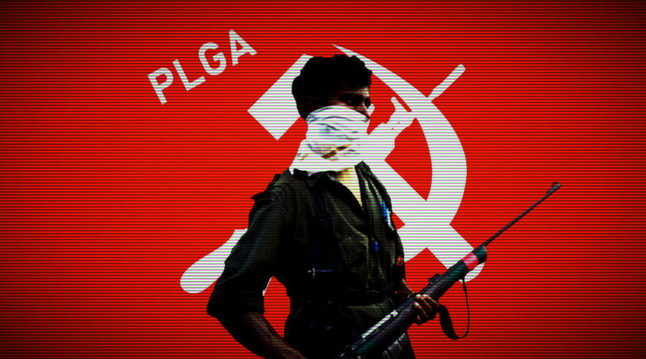
Rajnandgaon District, February 20, 2023: Two police personnel were killedwhen armed cadres of the CPI(Maoist)ambushed them near a mobile check-post in Chhattisgarh Rajnandgaon district bordering Maharashtra on Monday Morning, police said.The Maoists, who were carrying sophisticated weapons,(including AK-47rifles), targeted the two unarmed cops when they had just reported for duty atthe mobile check-post on the inter-state border, an area that has witnessed aMaoist attack after a long period of time, police reported.
The attack took place between 7 am and 8 am under Bortalav police stationlimits in Rajnandgaon district located adjoining Maharashtra, RajnandgaonSuperintendent of Police Abhishek Meena told PTI.
Following the incident, the Maharashtra Police along with their counterpartsin Chhattisgarh and Madhya Pradesh launched a joint operation to check themovement of the Maoists in border areas of the three states, they added.
The mobile check-spot, located around 4km away from the Bortalav police camp,is laid on a densely-forested road that connects Bortalav to Darrekasa(Maharashtra)and has been set up to check inter-state smuggling of liquor,police said.
As per preliminary information, when district force head constable RajeshSingh Rajput and Chhattisgarh Armed Force constable Lalit Kumar Samrathreached outside the check-post from the Bortalav camp, a small action team ofMaoist cadres armed with sophisticated weapons, including AK-47 and Insasrifles, opened indiscriminate fire at them, said Deputy Superintendent ofPolice(anti-Maoist operation)Ajit Ogre.
An investigation will be conducted to find out why the two police personnelwere not carrying their weapons, Ogre said.
The Maoists also set ablaze the motorcycle belonging to the two policepersonnel before escaping from the spot, located 180km from the Chhattisgarhcapital Raipur, he said. After the incident, a search operation was launchedin the area to track down the assailants, said the deputy superintendent ofpolice.
“Prima facie it seems, Darrekasa dalam(squad)or platoon No. 1 of the CPI(Maoist)was involved in the attack”, Ogre added.> Source : https://www.deccanherald.com/national/north-and-central/two-> unarmed-cops-killed-in-naxal-attack-on-chhattisgarh-maha-border-1193212.html
News Source: https://www.redspark.nu/en/peoples-war/2-police-personnel-dead-following-ambush-by-cpi-maoist-squad-in-rajnandgaon-district/
Germany: Beauties and Real Policy in Munich
Author: Tjen Folket Media
Description: Around 800 bourgeois politicians, military leaders, business leaders, academics and lobbyists from different countries gathered this weekend to talk about military policy.
Publish Time: 2023-02-20T07:54:36+00:00
Modified Time: 2023-02-20T10:30:22+00:00
Images: ['MSC2023-1160x661.png']
Tags: None
Category: 'Internasjonalt'
 *
*
By a commentator for the Earn Folket Media.
This weekend, the annual "Security Conference" in the Munich took place, and rounded 800 bourgeois politicians, military leaders, business leaders, academics and lobbyists from different countries gathered over three days to speak overvilitary policy.
According to NRK, the Norwegian state was heavily raised with as many as four ministers, Minister of State Jonas Gahr Støre. Also on the guest list were personalities Somgro Harlem Brundtland and Ine Eriksen Søreide, and of course NATO's Secretary General Stoltenberg.
The conference is the 59th in the series since its inception in 1963, and next to the AVG7 summit, the G20 summit and the World Economic Forum is one of the largest and most important bodies of political propaganda and agitation.
Of course, a common theme was the war in Ukraine, but the general character of the conference seems inextricably linked to a context in which the entire denimperialist world economy is in ever -increasing reaction and delay, and is in its greatest and deepest crisis since the second world war.
To the extent that it is possible to trace any kind of optimism from the yearmünchen conference, it must be when Ukrainian President Vladimir Zelelskiji's speech insinuated that the Russian invasion would be defeated in conference. However, although a certain applause from the audience, there seemed to be a few others who share Zelenskij's belief in such a so -facing end to the war.
Ukrainian Foreign Minister Dmytro Kuleba states that there will not be blivar-peace again in the "Euro-Atlantic area" before Russia no longer remains "any threat to the Euro-Atlantic area" and that it means "Russia must change". According to Kuleba, the main obstacle to one -lasting peace is that Putin is driven by a "personal obsession".
If you look at the other panel talks and debates at the conference, detergent time becomes clear that, for the vast majority of conference participants, the erreal policy is rather than the devil expiry on the agenda.
Questions such as how to reduce the increasing risk of "peer-to-peer" conflict, ie armed battle between neighboring countries, in a situation where the entire bourgeois international right, which was established in the wake of World War II, slowly but surely evaporates as a dew for the sun ..It is all summarized perhaps best in the annual report that the conference Girut, and which those for the 2023 edition have equipped with the astonishingly self-ironian title "Re: Vision". In truth, it is not a tøddel authors behind the one added or deducted to illustrate in more pictorial way what chairman Mao meant with his immortal words:
"There is chaos under the sky - the situation is excellent."
Also read:
Palestine: The resistance to the occupiers increases> Perus Communist Party about the situation in the country and the world> USA: "The green shift" and a world economy in decay>> Increasing tension between NATO and China> Yankee imperialism expanding in the Philippines> The world's richest 1% earns nearly twice as much as the rest of the world> together> Experts notify financial decline in 2023Referanser: MSC 2023: Top diplomats discuss future ofUkraine (dw.com)Five Norwegian government ministers are going to a meeting on European security (nrk.no)Munich Security Report2023 (securityconference.org)
News Source: https://tjen-folket.no/index.php/2023/02/20/tyskland-besettelser-og-realpolitikk-i-munchen/
Joint declaration!and now marxist-leninist-maoist and revolutionary Joint action and mobilitation
Author: maoistroad
Description: PCI(Maoist), ICSPWI, new international mlm revew TWO-LINES STRUGGLE call for two international days of actions for 24/25 february against...
Time: 2023-02-20T09:53:00-08:00
Images: ['loc%20war%20bis_page-0001-1.jpg', 'loc%20guerra%20SP_page-0001.jpg']

 PCI(Maoist), ICSPWI, new international mlm revew TWO-LINES STRUGGLE call fortwo international days of actions for 24/25 february against the imperialistwar and support to antimperialist struggles, people's wars in the world onbasis joint declaration
PCI(Maoist), ICSPWI, new international mlm revew TWO-LINES STRUGGLE call fortwo international days of actions for 24/25 february against the imperialistwar and support to antimperialist struggles, people's wars in the world onbasis joint declaration
all mlm parties and organisations, all revolutionary and antimperialistorganisations can join the statement and partecipate in autonomousformsparticipate in the two days of action and mobilization
adhesion and info or
ICSPWI adress _ csgpindia@gmail.com_
LET 'S DEVELOPE THE REVOLUTIONARY STRUGGLE AGAINST THE IMPERIALIST WORLD WARPREPARATIONS!
--DECLARATION--BasicallyThe ongoing proxy wars and trade wars, the emerging trade blocs andmilitary blocks, allotment of heavy military budgets, manufacturing colossaland mass destructive weapons, modernizing military forces and several types ofpreparations for world war even in space shows the neck and neck competitionfor the economic resources and political control over the countries of Asia,Africa and Latin America including several east European countries. All theseindicate the intensifying inter-imperialist contradictions and the scramblefor the re division of markets and world hegemony.
The world imperialist system, decadent and decomposed, in its inevitable one-way march towards the grave, has unloaded on society the terrible consequencesof the increasingly acute world economic crisis, and with it, has extended anddeepened in all continents social, health and environmental crises. For theinsatiable imperialists, the monopolization and accumulation of capital at thecost of the global exploitation of social labor, the usurious export offinancial capital, the destruction of nature, the plundering of the oppressedcountries, is not enough. The crises of their system, mainly the economic one,impel the imperialists to carry out a new division of the already dividedworld. A new division that can only be achieved by economic force, financialforce, military force, the force of the world war between a few imperialistcountries in decline and others fighting for world hegemony, as a product ofthe inexorable economic law of the uneven development of the imperialistcountries.
But the same economic and social causes that push the imperialists to wars ofrobbery, become unlivable, unbearable material conditions for the slaves ofcapital, material conditions of the rebellion of the exploited proletarians,peoples, nations and countries oppressed by the monopolies and imperialistcountries. And it is up to the International Communist Movement to bring themthe revolutionary conscience, organize and transform the rebellions into arevolutionary struggle against the common enemy: the world capitalist systemof oppression and exploitation.
Com. Mao says that: 'World war may break out and revolutions may occur as aconsequence, or, revolutions may breakout everywhere and while confining itsstrength to with stand them, it may become impossible for imperialism toundertake another world war, whichever way it occurs this is as era ofrevolution'.Imperialist capitalism is in crisis!Long live Socialism and Communism!
Or the revolution stops the war or the war unleashes the revolution!
Workers and peoples of the world, unite against imperialism!
Communist Worker Union(mlm)Colombia
Construction Committee of the Maoist Communist Party of Galicia
Maoist Communist Party - Italy
Communist(maoist)Party of Afghanistan
Communist Party of India(Maoist)
Communist Party of Nepal(Majority)
Communist Party of Nepal(Maoist- Revolutionary)
Red Road of Iran(maoist group)
Proletarian Party of Purba Bangla(PBSP/Bangladesh)
Communist Party of Switzerland(Red Faction)
TKP-ML
Reorganisation Communist - Brasil
Young Communist League of Switzerland
Bulgarian Workers' and Peasants' Party
**El Partido Comunista de la India(Maoist), the ICSPWI(International Committee to Support for Popular War in India and the new MLMTWO-Lines Struggle International Magazine(Two -line fighting)They call two days of international actions for February 24/25 against the imperialist war, inapoy
All MLM parties and organizations, all relevant and anti -imperialist organizations can join the declaration and can participate in autonomass forms the two days of action and mobitation
ADHESION AND REPORTS TO ICSPWI CSGPINDIA@GMAIL.COM
Let's develop the revolutionary struggle against the preparations for imperialist Guerramundial!
-STATEMENT-Basically, the wars of power and ongoing commercial wars, the emerging commercial and militarybloques, the allocation of large military presupers, the manufacture of colossal and destruction weapons, the modernization of the military forces and several preparatory types for the World War, even In space, they show lacompetence due to economic resources and political control of the countries ofasia, Africa and Latin America, including several countries in Eastern Europe. All this indicates the intensification of interimperialist contradictions and struggle for the new distribution of markets and world hegemony.
The world imperialist system, decadent and broken down, in its unidirectional inevitablechamber towards the grave, has downloaded the most and more acute world economic crisis on society, and with it, it has extended and deepened on all continents the social, sanitary and sanitary crises and Environmental For the Imperialist insatiable, laminapolization and accumulation of capital at the expense of the global exploitation of social work, the usual export of financial capital, the destruction of nature, the looting of the oppressed countries, is not enough. The crisis of its system, mainly the economic one, promotes the imperialists to make a new distribution of the world already divided. A new public that can only be achieved by the economic force, the Financiera Force, the Military Force, the Force of the World War among a few imperialist people in decay and others that fight for the hegemonic, as a product of the inexorable economic law of unequal development of the countries Imperialists
But the same economic and social causes that push the imperialists warehouses of prey, become invivible estoparable material conditions for the slaves of capital, material conditions of the albelión of the exploited proletarians, of the peoples, nations and countries approached by the monopolies and The imperialist countries. And international communist almovation corresponds to bring them revolutionary consciousness, organize and transform rebellions into a revolutionary struggle against common elenemeigo: the world capitalist system of oppression and exploitation.It corresponds to the communists to give an example of an internationalist unit and fight against the preparations for a new world imperialist carnage; unite and coordinate efforts to promote the revolutionary struggle of the proproletary armies in all countries against the mobilization of troops and weapons palalas reactionary wars; Build a common front with all reflections, anti -imperialist, democratic and environmental forces that oppose war and military support and commitment of Lacayos regimes with their imperialist masters throughout the world especially in semi -colonial and semi -feudal countries; Reject and denounce as traitors to the opportunistic System who, in the name of the proletariat and the peoples, give suapoyo to one of the imperialist factions, when all of them are emortial enemies of the oppressed and exploited of the world; Supporting without truce the fighting directed by the authentic Marxist-Leninist-Maoistic communists, mainly the popular war in India along with otherpopular wars in the Philippines, Turkey, Peru, today are the avant-garde of the world private revolution, against imperialism and its reactionary dogsguardianes National
Imperialist capitalism is in crisis!Long live socialism and community!
Or the revolution stops war or war unleashes the revolution!
Proletarians and peoples of the world, units against imperialism!
Communist Workers Union(mlm)Colombia Committee of Construcción del Communist Party Maoist of Galicia Communist Party Maoist - Italy Communist Party(Maoist)of Afghanistan Communist Party of India(Maoist)Nepal Communist Party(Most)Nepal Communist Party(Maoist-Revolutionary)Red road from Iran(Maoist group)Purba Bangla proletarian party(PBSP/Bangladesh)Swiss Communist Party(Red fraction)
Turkey Communist Party - ML Communist Reorganization - Brazil
Liga Youth Communist from Switzerland
Los Obreros and Peasant Party of Bulgaria
News Source: https://maoistroad.blogspot.com/2023/02/pcimaoist-icspwi-new-international-mlm.html
Jared Roark’s Letter from Prison
Author: strugglesessions
Publish Time: 2023-02-20T10:00:00+00:00
Modified Time: 2023-02-08T15:04:43+00:00
Description: Note: The following is a widely circulated letter that Jared (Dallas/Ed Dalton/Kavga/Cathal) sent from prison. According to a source, this was “circulated as required reading among party memb…
Images: []
Categories: article
Type: ['Dogma', 'Rebellion']
Note: The following is a widely circulated letter that Jared(DALLAS/EDDALTON/FIGHT/CATHAL)sent from prison. According to a source, this was"circulated as required reading among party members … after this letter,everyone was required to write letters to Jared. People were afraid of him andafraid of what would happen when he got out, as the threats in this letterhighlight, he wanted to have this effect on people." I post it to show whatsort of character the so-called 'great leadership' of the cr-cpusa really was,in his own words. Needless to say, I share it in order to denounce it. Theoriginal letter used legal names which were removed by whoever transcribed theletter; I have restored these for clarity. I have otherwise left the documentuntouched.
May 1, 2021
[Recipient, likely Chris Ledesma],
Please share this letter with my closest friends. Today is my favorite day ofthe year and I am always filled with anxious joy. That feeling is stillpresent. But there is another feeling in my heart and another thought in mymind. That is sorrow and deep disappointment. This is not directed at [Chris?]or [Jared's wife] who both wrote to me. This is directed at my friends who didnot, at least for over a month.
That lack of support speaks volumes, far more than any praises uttered incomfort and warmth. Fair weather friends are not of interest to me andwhatever you do to rationalize is just excuses meant to deflect, to protectand preserve serious errors. It wounds me and caused irreparable damage to myview of you all. What is done is done and my wounds are secondary-nothing andno one can defeat me. Not even you. I am frankly Rakhmatov in comparison to somany Lopukhovs and Kirsanovs and I see no point in pretending that any othercondition prevails, even though I raise the caviat, only by comparison.
That being said, my own wounds are nothing. What is truly outrageous is yourdress rehearsal for letting down future poliical prisoners who are inevitableand by chance could be anyone. Your example you set is what is trulyunforgiveable and despicable. I want you to consider for a moment that me,your friend, has been so low on your list that it took you over a month towrite, some of you have not even written!Very well, message received. I nowknow where we stand and am glad to have been set straight. It is the matter ofprinciple that I will not let slide.She is perhaps the only person to have given me close to the support Ideserve, I have told myself that she would do more if she could but I amlikely wrong there and am more correct to say that while she loves me I amalso not prioritized by her as much as I deserve to be. This is anotherwounding political remark. Her time is not adjusted in my interests or in theinterests of our marriage. This will have a very devastating affect on thewhole family.
You close friends bear no small responsibility here either and could have beenmore considerate with the limited time we have to talk, write, etc.,
I am not directing this at legal aid, their performance was superior but atleast they had performance. I can at least award a 'participation trophy' intheir case because after all they can improve upon their false start, havingstarted. I fault you all far more.
If this is the last letter you receive from me, or if I do not write you backit is because I do not wish to be in contact with fair weather friends andknow that it is not me avoiding conflict on the contrary I am waiting toaddress you until condtions place me on a more favorable footing. Considerthis me placing you all on notice before I come home and bombard yourheadquarters.
I have nothing more to say unitl then:
"There is nothing to be done." -Mayakovsky
Your Friend,
[Jared Roark]
News Source: https://struggle-sessions.com/2023/02/20/jared-roarks-letter-from-prison/
Brief Starting Week
Author: SolRojista (Person)
Publisher: Blogger (Organization)
Description: Surinam. A mass revolt has taken the streets of Paramaribo, the capital of the country. The protests have been summoned by Sindicat ...
Publish Time: 2023-02-20T12:39:00-08:00
Modified Time: 2023-02-20T12:39:23-08:00
Images: ['breves%201.jpg', 'breves%202.jpg', 'breves%203.jpg', 'breves%204.jpg']
 Surinam. A mass revolt has taken the streets of Paramaribo, the capital of the country. The protests have been convened by unions and popular organizations that denounce the high cost of living, especially after the capital of food prices, fuels and electrical energy, among others. The masses directly indicate to the reactionary government of the expolicíachan Santokhi, for being responsible for the growing ruin, who also has ordered to detain the leaders and main activists of the manifestations made last Friday, February 17; So far there are more than one hundred people detained, but the figures are conservative. Lasprotestas coincided with the evaluation of the IMF on the country and the new economic measures against the population, which has raised the popular combativity against the regime and imperialism. During the protests, clashes with the Police were registered, especially in the National Abese enclosure that was surrounded and attacked by the protesters in repudiation of antipopular policies, as well as some gas stations and commercial establishments where the masses made expropriations. Now the government intends to "return to normal" installing a curfew and displeasing army and police operations to locate and stop here you encourage demonstrations.
Surinam. A mass revolt has taken the streets of Paramaribo, the capital of the country. The protests have been convened by unions and popular organizations that denounce the high cost of living, especially after the capital of food prices, fuels and electrical energy, among others. The masses directly indicate to the reactionary government of the expolicíachan Santokhi, for being responsible for the growing ruin, who also has ordered to detain the leaders and main activists of the manifestations made last Friday, February 17; So far there are more than one hundred people detained, but the figures are conservative. Lasprotestas coincided with the evaluation of the IMF on the country and the new economic measures against the population, which has raised the popular combativity against the regime and imperialism. During the protests, clashes with the Police were registered, especially in the National Abese enclosure that was surrounded and attacked by the protesters in repudiation of antipopular policies, as well as some gas stations and commercial establishments where the masses made expropriations. Now the government intends to "return to normal" installing a curfew and displeasing army and police operations to locate and stop here you encourage demonstrations.

 Morelos/Mexico. 4 years after the cowardly murder of fellow Samir Floresoberanes by the narco -speaking, who was an opponent to the megaproject of disappointment and death "Integral projector Morelos", today a career for the life of the peoples was carried out, where the most Of 200 people of different ages and geographies of the country participated. It is known that the intellectual managers of their murder are the 3 levels of government, but in the investigations they only point to 4 material authors, of which one is in jail, another was killed, an fugitive and one more unidentified, before the disinterest of the Attorney General of the State of Morelos, demand that the case be taken to the Attorney General's Office and seal to declare Erik Flores, federal delegate of Morelos, and Cuauhtémocblanco, governor of Morelos. Justice for fellow Samir and punishment for guilty!NO TO THE INTEGRAL PROJECT MORELOS!
Morelos/Mexico. 4 years after the cowardly murder of fellow Samir Floresoberanes by the narco -speaking, who was an opponent to the megaproject of disappointment and death "Integral projector Morelos", today a career for the life of the peoples was carried out, where the most Of 200 people of different ages and geographies of the country participated. It is known that the intellectual managers of their murder are the 3 levels of government, but in the investigations they only point to 4 material authors, of which one is in jail, another was killed, an fugitive and one more unidentified, before the disinterest of the Attorney General of the State of Morelos, demand that the case be taken to the Attorney General's Office and seal to declare Erik Flores, federal delegate of Morelos, and Cuauhtémocblanco, governor of Morelos. Justice for fellow Samir and punishment for guilty!NO TO THE INTEGRAL PROJECT MORELOS!
 Oaxaca/Mexico. On Sunday, February 19, the Youth Estate Assembly was held, where different committees of young students and workers from the city and the country To analyze and draw their tasks, as well as to appoint a new Juvenile State Committee, it helps to coordinate and project the tasks of its different organizations. New colleagues assumed that work to raise, defend and apply the political line of our organization.
Oaxaca/Mexico. On Sunday, February 19, the Youth Estate Assembly was held, where different committees of young students and workers from the city and the country To analyze and draw their tasks, as well as to appoint a new Juvenile State Committee, it helps to coordinate and project the tasks of its different organizations. New colleagues assumed that work to raise, defend and apply the political line of our organization.
News Source: http://solrojista.blogspot.com/2023/02/breves-iniciando-semana_20.html
 Joint disclaration!Marxist-Leninist-Maoist and now joint action and revolutionary mobilization 
Author: Revolución Obrera
Time: 2023-02-20T16:10:49-05:00
Images: ['Afiche-1.jpg', 'Afiche-2.jpg']
Tags: ['Estados Unidos', 'Rusia', 'Ucrania']
Categories: ['Movimiento Comunista Internacional']
!Marxist-Leninista-Maoist and now joint action and revolutionary mobilization  1](http://www.revolucionobrera.com/wp-content/uploads/2023/02/Afiche-1.jpg)Taken from _ maoistroad _ , February 20, 2023
** The Communist Party of India(Maoist), the ICSPWI(International Committee to Support for Popular War in India and the new MLMTWO-Lines Struggle International Magazine(Two -line fighting)They call two days of international actions for February 24/25 against the imperialist war, inapoy
All MLM parties and organizations, all relevant and anti -imperialist organizations can join the declaration and participate autonomously in the two days of action and mobilization. ****
ADHESION AND REPORTS TO ICSPWI CSGPINDIA@GMAIL.COM
!Marxist-Leninista-Maoist and now joint action and revolutionary mobilization  2](https://www.revolucionobrera.com/wp-content/uploads/2023/02/Afiche-2.jpg)We invite Aimpprimr *
Let's develop the revolutionary struggle against the preparations for imperialist Guerramundial!
-STATEMENT-Basically, the wars of power and ongoing commercial wars, the emerging commercial and militarybloques, the allocation of large military presupers, the manufacture of colossal and destruction weapons, the modernization of the military forces and several preparatory types for the World War, even In space, they show lacompetence due to economic resources and political control of the countries ofasia, Africa and Latin America, including several countries in Eastern Europe. All this indicates the intensification of interimperialist contradictions and struggle for the new distribution of markets and world hegemony.
The world imperialist system, decadent and broken down, in its unidirectional inevitablechamber towards the grave, has downloaded the most and more acute world economic crisis on society, and with it, it has extended and deepened on all continents the social, sanitary and sanitary crises and Environmental For the Imperialist insatiable, laminapolization and accumulation of capital at the expense of the global exploitation of social work, the usual export of financial capital, the destruction of nature, the looting of the oppressed countries, is not enough. The crisis of its system, mainly the economic one, promotes the imperialists to make a new distribution of the world already divided. A new public that can only be achieved by the economic force, the Financiera Force, the Military Force, the Force of the World War among a few imperialist people in decay and others that fight for the hegemonic, as a product of the inexorable economic law of unequal development of the countries Imperialists
But the same economic and social causes that push the imperialists warehouses of prey, become invivible estoparable material conditions for the slaves of capital, material conditions of the albelión of the exploited proletarians, of the peoples, nations and countries approached by the monopolies and The imperialist countries. And international communist almovation corresponds to bring them revolutionary consciousness, organize and transform rebellions into a revolutionary struggle against common elenemeigo: the world capitalist system of oppression and exploitation.It corresponds to the communists to give an example of an internationalist unit and fight against the preparations for a new world imperialist carnage; unite and coordinate efforts to promote the revolutionary struggle of the proproletary armies in all countries against the mobilization of troops and weapons palalas reactionary wars; Build a common front with all reflections, anti -imperialist, democratic and environmental forces that oppose war and military support and commitment of Lacayos regimes with their imperialist masters throughout the world especially in semi -colonial and semi -feudal countries; Reject and denounce as traitors to the opportunistic System who, in the name of the proletariat and the peoples, give suapoyo to one of the imperialist factions, when all of them are emortial enemies of the oppressed and exploited of the world; Supporting without truce the fighting directed by the authentic Marxist-Leninist-Maoistic communists, mainly the popular war in India along with otherpopular wars in the Philippines, Turkey, Peru, today are the avant-garde of the world private revolution, against imperialism and its reactionary dogsguardianes National
Imperialist capitalism is in crisis!Long live socialism and community!
Or the revolution stops war or war unleashes the revolution!
Proletarians and peoples of the world, units against imperialism!
Communist Workers Union(mlm)Colombia
Construcción del Committee Committee Communist Party of Galicia
Maoist Communist Party - Italy
Communist party(Maoist)of Afghanistan
India Communist Party(Maoist)Nepal Communist Party(Most)Nepal Communist Party(Maoist-Revolutionary)Red road from Iran(Maoist group)Purba Bangla proletarian party(PBSP/Bangladesh)Swiss Communist Party(Red fraction)Turkey Communist Party-ML TKP-ML
Brasil communist reorganization
Switzerland youth league
Bulgarian Workers and Peasants Party
News Source: https://www.revolucionobrera.com/internacional/mci/declaracion-conjunta-2/
MG: Against privatization and layoffs, metrovikers challenge strike in Belo Horizonte - The New Democracy
Author: Giovanna Maria
Description: Belo Horizonte subway people have been running since February 15, requiring the revocation of the Belo Horizonte subway auction and against the risk of
Publish Time: 2023-02-20T16:26:41-03:00
Modified Time: 2023-02-20T16:26:45-03:00
Updated Time: 2023-02-20T16:26:45-03:00
Images: ['assembleia16022023.jpg']
Section: Nacional
Tags: ['belo horizonte', 'Luta Classista']
Type: article
 Metrovaries make assembly before the strike. Photo: Sindimetro-MG
Metrovaries make assembly before the strike. Photo: Sindimetro-MG
Belo Horizonte subways have been strike since February 15, requiring the revocation of the Belo Horizonte subway auction and against the risk of mass. The strike already reaches five days, despite the emultal punishments of the reactionary judiciary against the union.
The category denounces that the privatization of the service - whose auction was held in December - will produce mass layoffs, since it was not proposed by job stability plan. It is estimated that about 1.6 Milmetavia will be dismissed.
In addition, the workers decided not to operate with the minimum required by the manner, despite the threats of the Labor Court and the Urban Detrens Company of Minas Gerais(CBTU-MG). As estações de metrô seguem fechadasdurante a greve.
O judiciário reacionário já acatou a um pedido da CBTU-MG de bloqueio judicialimediato no valor de R$ 250 mil das contas bancárias do Sindicato dosMetroviários de Minas Gerais (I don't upro). O pedido foi determinado pelodesembargador César Pereira da Silva Machado Júnior, vice-presidente doTribunal Regional do Trabalho de MG.
O SindiMetro denunciou que, após a declaração de greve, a direção da empresaconvocou e ofereceu vantagens para os trabalhadores que não participassem dagreve. Além disso, diretores da CBTU-MG escalaram supervisores para conduziras composições no dia 14/02, data em que deveria iniciar a greve, inclusivecom trens acoplados, em clara ameaça aos grevistas.
Operários denunciam governo estadual e federal
Em nota, o SindiMetro afirmou que “não existe, para a categoria, mais tempopara tentativas de conversas intermináveis, é necessário o diálogo, mas comcompromissos por escrito sobre o destino dos 1.600 empregados”. Ostrabalhadores em greve também afirmam que “o governo federal e estadualassumiu o compromisso de alimentar com dinheiro público os empresáriosprivados do setor, assim como fazem com as empresas do transporte rodoviário.Aliás, mesmo assim as empresas de coletivos são um péssimo exemplo para amobilidade urbana: poluem, as passagens são caras e não têm compromisso comhorários, inclusive reduzindo as viagens quando bem entendem.”.
Leia também: MG: Motoristas de ônibus em greve exigem saláriodigno
Workers struggle against the sale of the subway since last year
BH subways struggle with strikes and other shares since August 25 ,2022 against the sale of services, one day after the Federal Court of Accounts(TCU)authorize the opening of the notice for its concession.
The auction took place in December, when the BH subway was awarded for R $ 25,755,111 by the company from São Paulo to comply. Before the auction, BH subway people reported the sale of structures and services at a very low pricing, as well as the fact that, after privatization, tariffs tend to increase, workers lose their rights, among other attacks on the people of the people. "In addition to the 35 compositions, we have 19 stations, four energy, 29 kilometers of rail bed and the long buildings of the stretch. CBTU is being offered at a banana price," said Osindimeter.
inspired by subway, other strikes explode in the public transport
On January 16, bus drivers performed a strike on Belo Horizonte -Arching decent wages and reduced work hours. BH's urban urban mobility, the Belohorizonte Transport and Transit Company(Bhatras), he already received millionaire subsidies from the City Hall, and even though he refused to increase workers' salary and, if he did, threatened to increase the price of the passengers.(violating the agreement for subsidies, which implied not increasing the price of the fare).
News Source: https://anovademocracia.com.br/mg-contra-privatizacao-e-demissoes-metroviarios-desatam-greve-em-belo-horizonte/
Against the crisis, 1,400 peasant families face gunmen and take estates across the country - the new democracy
Author: Gabriel Artur
Description: Thousands of peasants occupied dozens of large estates throughout Brazil during the “Red Carnival & Quot;, wave of occupations directed by the Front Movement
Publish Time: 2023-02-20T16:36:37-03:00
Modified Time: 2023-02-20T20:58:43-03:00
Updated Time: 2023-02-20T20:58:43-03:00
Images: ['WhatsApp-Image-2022-03-03-at-11.27.32-1-1200x630-1.jpeg', 'svg+xml;base64,PHN2ZyB4bWxucz0iaHR0cDovL3d3dy53My5vcmcvMjAwMC9zdmciIHdpZHRoPSI2MjgiIGhlaWdodD0iMzk4IiB2aWV3Qm94PSIwIDAgNjI4IDM5OCI+PHJlY3Qgd2lkdGg9IjEwMCUiIGhlaWdodD0iMTAwJSIgc3R5bGU9ImZpbGw6I2NmZDRkYjtmaWxsLW9wYWNpdHk6IDAuMTsiLz48L3N2Zz4=', 'svg+xml;base64,PHN2ZyB4bWxucz0iaHR0cDovL3d3dy53My5vcmcvMjAwMC9zdmciIHdpZHRoPSI2OTkiIGhlaWdodD0iNDM5IiB2aWV3Qm94PSIwIDAgNjk5IDQzOSI+PHJlY3Qgd2lkdGg9IjEwMCUiIGhlaWdodD0iMTAwJSIgc3R5bGU9ImZpbGw6I2NmZDRkYjtmaWxsLW9wYWNpdHk6IDAuMTsiLz48L3N2Zz4=']
Section: Luta Pela Terra
Tags: ['Pontal do Paranapanema']
Type: article
 Thousands of peasants occupied dozens of large estates throughout the Brazilian carnival, wave of occupations directed by the National Fighting Fight - Campo and City movement(FNL)Against the crisis that plagues the Brazilian. To date, the occupations are concentrated in Alagoas, São Paulo(in the Pontal do Paranapanema region), in Mato Grosso do Sul and Noparaná. According to the FNL, the peasants are expected to occupy the most rapids throughout February.
Thousands of peasants occupied dozens of large estates throughout the Brazilian carnival, wave of occupations directed by the National Fighting Fight - Campo and City movement(FNL)Against the crisis that plagues the Brazilian. To date, the occupations are concentrated in Alagoas, São Paulo(in the Pontal do Paranapanema region), in Mato Grosso do Sul and Noparaná. According to the FNL, the peasants are expected to occupy the most rapids throughout February.
According to the movement, the lands occupied officially belong to the Union would be destined for “land reform”. However, these lands are in the hands of few landowners and, in most cases, without any documentation.
Occupations mobilized at least 1,400 families in 20 days
The FNL states that in early February several occupations were held Nauregião da Alta Paulista, in São Paulo. According to the movement, 164 families have held farms in Nova Independência(SANTA TEREZINHA FARM), Montecastelo(FARM PEACE)and Rancharia(Marambaia Farm).
No dia 9 de fevereiro, no estado de Alagoas, 68 famílias ocuparam uma área nobairro Zélia Rocha, localizado no município de Arapiraca. Já em Maragogi, 83famílias camponesas ocuparam a Fazenda Girassol. No dia 13/02, dezenas defamílias ocuparam outra área em Arapiraca.
No dia 17/02, uma área de 13 hectares abandonada há mais de dez anos pelaCompanhia de Habitação de Ponta Grossa (Prolar), in Ponta Grossa, Paraná, was occupied by more than 70 families. The area was currently used for garbage sticking, was the target of burning and the development of pests, having part of it invaded by a neighboring farm. The occupation was named Dandarados Palmares.
On 02/18, about 410 peasant families occupied three large estates of São Paulo, Pontal de Paranapanema region. At the time, areas were occupied in Marabá Paulista(Fazenda Floresta and São João Farm), Rosana(São Lourenço Farm), President Venceslau(São Francisco Farm)esandolina(Fazenda São Domingos, area of the Latifundiária Norweguisaumo Bioenergy, where it occurred an attack on peasants in 2022).
Already on 02/20, 40 families occupied an area in the district of Jacipora, nominípio Dracena(SP). A ocupação foi nomeada José Gonçalves da Silva.
No Paraná, camponeses enfrentam criminalização da luta pela terra
No sábado de carnaval (18/02), in Ponta Grossa(PR), the Military Police(PM)He withdrew the dozens of families occupying the area abandoned by the prolar. Repressive asphorças of the old Latifundia-Burocratic state repressed the camponements with tear gas and death threats. At the end of the operation, 13 members of the FNL, among them the peasant leadership Leandrodias, FNL coordinating lawyer in Ponta Grossa, were taken to the 13th Ponta Grossa Popolival Division.
 PM Shock Represses Peasants, Ponta Grossa/PR. Photo: FNL
PM Shock Represses Peasants, Ponta Grossa/PR. Photo: FNL
The coordinator denounced the PM's action to the local newspaper the network: “The shock was occupying, approached a worker, who even showed his crack in work, stating that he was a worker, and yet the police said that they were not interested in, and that they would burn this resident I live inside yourbar. ”
According to the FNL, in a statement, "after the occupation, the Ponta Grossaalega City Hall that sold the land to a construction company and the PM would have answered the private owner request, even without a court decision for reintegration deposit."
In SP, Latifundium sends gunmen to terrorize peasants
Two occupations of FNL, in the Pontal de Paranapanema region(SP), shot out on 02/18 by paramilitary flocks of the landlord.
In Rosana, at São Lourenço Farm, gunmen fired on the camfoners, advanced with machines on the cars of the camped peasants and barricades in front of the camps that already existed in the region. Decoro with the movement, there was also a strong police apparatus, with helicopters and vehicles presence. Already in Presidente Venceslau, at CampoMarielle Franco, strongly armed men invaded the occupation and expelling peasant families from the site.##### Against the crisis, families take estates throughout Brazil
The article entitled “Under the Call of the FNL, peasants occupy the country's porto latifundes”, Published by and in February, 2022, when the“ red carnival ”of that year, he says:“ The great mobilization that resulted in the baptismal of estates throughout the country, comes from meeting with the masses of workers who, in front of Colossal crisis that is imposed on it, is led to understand and seek to solve its problems, gaining a piece of land. With this, it takes shape and develops a riding that pushes the landless peasants versus latifundium, as part of the fundamental contradiction of our society, masses versus semi -feudality(contradiction never resolved, but fostered by the old state).”.
O artigo finaliza: “É sob este cenário que cada vez mais famílias se mobilizampara conseguir um pedaço de terra, enfrentando a tentativa de criminalizaçãodos movimentos populares e os ataques de bandos militares e paramilitares amando do latifúndio.”.
News Source: https://anovademocracia.com.br/contra-a-crise-14-mil-familias-camponesas-tomam-latifundios-por-todo-o-brasil/
PC February 20 - The reactionary government of Meloni transforms every report of the government into repressive criminalization - Parma
Author: maoist
Description: 10-100-1000 of these creative struggle initiatives!Parma, carnival party at the social center with staging of the "crime of Giorgia ...
Time: 2023-02-20T17:04:00+01:00
Images: []
10-100-1000 of these creative struggle initiatives!
Parma, carnival party at the social center with the staging of the "Crime Giorgia Meloni"
Parma, February 19, 2023 - It is controversial on the Carnival party, organized Student collective Art Lab occupied in Parma, with the staging of the murder of the Prime Minister Giorgia Meloni. in the * poster * Widespread by the students, Jessica Fletcher appears(The lady in yellow played by Angela Lansbury) con una scritta che recita: " Sonoqui per risolvere il delitto Meloni ". " Ma non c 'è stato nessun delittoMeloni!" risponde un pupazzo a fianco. Il finale del duetto: " Ah, peccato".
 The complaint
The complaint
The reactions are immediate: "The flyer of the Parma social center that wishes her death to President Meloni is simply squalid and chilling", declares the group leader of Fratelli d'Italia in the Chamber of Deputies, Tommaso Foti. and adds: "in A clumsy attempt by macabre comedy, the leftists heredids a murderer communism yes
They reduce to acclaim the disappearance of the first woman president of the Italian history of Italy. We wonder where the sensitivity to idiots of women has ended so acclaimed by a specific eco -ult political world. We await the condemnation of this Flyer by all the forces that are said to be democratic when it is comfortable ".
The condemnation of the deputy Gaetana Russo is even harder(Brothers of Italy). "Vergognosa la locandina diramata a Parma, a firma Art LabOccupato, in cui il collettivo studentesco incita alle 22 di stasera, 18febbraio, ad una festa di carnevale nello spazio sociale occupato di Borgotanzi 26, a partecipare alla messa in scena dell'omicidio del Presidente delConsiglio Giorgia Meloni".
Non è la prima volta che il collettivo studentesco in Emilia Romagna -si ricordi il pupazzo a penzoloni a Bologna che ritraeva GiorgiaMeloni, in the aftermath of the government's settlement, to the head in the Jun - it fosters this hatred, and we expect the left to take once and for all an exposure, clear and decisive, against this brutality ".
News Source: https://proletaricomunisti.blogspot.com/2023/02/pc-20-febbraio-il-governo-reazionario.html
PC February 20 - In times of Meloni government if protests can also shoot you - at the Rai of Turin
Author: maoist
Description: Moments of voltage to Rai: EXTINSTRATION REBellion activist threatened with a gun .... Three groups of EXTINSTRATION REBEL activists ...
Time: 2023-02-20T17:10:00+01:00
Images: []
moments of voltage to Rai: EXTINSTRATION REBELLION Activist threatening a gun
.... three groups of EXTINSTRATION REBELLION activists have occupied the sedidelle main media companies in Turin, from Rai to La Stampa and Larepubblica. Sitting in silence, with signs in hand, they wanted to bring a request for help to the media world. "Climate crisis. Sound managers. Help us to tell who criminals are", the signs were read.
At the Rai headquarters in via Cavalli, however, not everything went as expected. Cinque activists were blocked by force, one of them was thrown away and threatened with a gun. A serious gesture, which occurred in the context of a peaceful event, only the objective was
emphasize the need to tell the responsibilities of the governments to overcome the climatic crisis. A gesture that will not see, however, some legal inconsistencies.
"Despite the illegitimacy and gravity of the gesture, we think that Sianessario give a wider reading than what happened this morning and we will not proceed with any complaint" in fact, "Roberto comments the activist activist in the episode. "In recent months, many of the disputes of this country have been told as violent or sometimes adopting the established order. What happened today, even sixthly unjustifiable, is therefore the symptom of an atmosphere of alarm and consciously conscious dialing of the social conflict"
Although the activists were all uncovered and although they stood on the ground when stopped by the guards, being entered made the situation losing control in a few seconds.
Today's episode is a worrying symptom, which should trigger about an expanse reflection on the consequences of a narrative that exasperate the tones and polarization.
Video HERE: https://www.quotidianopiemontese.it/2023/02/17/mopher-The-ttivista-i-extinction-rebellion-inteciaccia-una-una-pistola-Video
News Source: https://proletaricomunisti.blogspot.com/2023/02/pc-20-febbraio-in-tempi-di-governo.html
PC February 20 - Biden in Kiev - a decisive step towards the world imperialist war - The time of war on the Ion war every country in the world
Author: maoist
Description: Surprise biden in Kiev to meet Zelensky Ukrainian crisis. A year after the start of the war, the US President went to Gran S ...
Time: 2023-02-20T18:25:00+01:00
Images: ['kiev-zelensky-kiev.jpg']
Surprise biden in Kiev to meet Zelensky
Ukrainian crisis. A year after the beginning of the war, the US president has secretly secret himself in the Ukrainian capital. Promised new aid to Kiev
 Biden and Zelensky in Kiev near the cathedral of San Michele - Ap Photo/Evan Vucci
Biden and Zelensky in Kiev near the cathedral of San Michele - Ap Photo/Evan Vucci
By depisting all the media, in secret, US President Joe Biden has been in Kiev to meet Zelensky one year after the Russian void of Ukraine.
Joe Biden had a long interview with the Ukrainian president during the Quicale they dealt with the theme of the "next months of war", of which the Ukraine need to defend himself from the Russian aggression and a "right peace trial And durable ", explained the councilor for American national lasiculia, Jake Sullivan, in a virtual briefing from Kievcon a group of journalists.
The US president and the Ukrainian president showed themselves to the center of the Ukrainian Carapital, near the Cathedral of San Michele. "She and all gliucraini, Mr. President, remember the world the meaning of the word of the word," said President Biden. "We will be with you for the time Cheserve," he added.
News Source: https://proletaricomunisti.blogspot.com/2023/02/pc-20-febbraio-biden-kiev-un-passo.html
PC February 20 - Giorgia Meloni the Servitta of US imperialism, the representative of the business committee of Italian imperialism, of the masters and lords of the war in Kiev
Author: maoist
Description: The government drags us to war - 24/25 February National mobilization on the jobs and in the Meloni squares traveling to Kiev: ...
Time: 2023-02-20T18:46:00+01:00
Images: ['213255018-ec0dd0a6-62c4-4c9f-99f6-1da727b56cb4.jpg', 'Sondaggio-guerra-febbraio-2023.jpg']
The government drags us to war - 24/25 February
National mobilization on jobs and in the squares
Meloni traveling to Kiev:
on February 21st the meeting with the Ukrainian leader, first the stage in Warsaw. The trip to the sign of Draghi but the premier will be alone in the wagon that will lap in the Ukrainian capital
Meloni towards Kiev ready to open on Italian hunting
 The meeting between Zelensky and Meloni in Brussels, February 10th(ansa)Italy could provide Ukraine with 5 war planes between Tornado and Amx. The idea of hosting the international conference for reconstruction
The meeting between Zelensky and Meloni in Brussels, February 10th(ansa)Italy could provide Ukraine with 5 war planes between Tornado and Amx. The idea of hosting the international conference for reconstruction
There is a secret number and already examined in a reserved way by the verticidal'S Executive: five. Many could be military fighters that Romainvie will in the future in Kiev. But as long as he is not the first on the list of "contributors", for reasons of political opportunity. And to give the impression to be almost forced to follow the long wave of the allies, captained in this phase from Great Britain who pushes partners to a new, decisive, step.
 In Italy the result of the latest survey on what Italian lapopulation of the sending of weapons in Ukraine was made. Once again Lamaggiorene - 52% - is against it. Exactly the opposite of how much he voted the parliament
In Italy the result of the latest survey on what Italian lapopulation of the sending of weapons in Ukraine was made. Once again Lamaggiorene - 52% - is against it. Exactly the opposite of how much he voted the parliament
News Source: https://proletaricomunisti.blogspot.com/2023/02/pc-20-febbraio-giorgia-meloni-la.html
The shopping basket and the proletariat: increasingly expensive; poorer
Author: SERVIR AL PUEBLO
Publish Time: 2023-02-20T23:10:38+00:00
Modified Time: 2023-02-20T23:10:38+00:00
Description: The star proposal of Unidos Podemos is a “€ 200 € check”. Terrible measure: continue giving total freedom to companies to raise prices and, above, give them a gift of € 200 of Dine ...
Images: []
Type: article
02/20/2023
The country, bourgeois press paradigm of Spanish imperialism, Unanoticia published by the Government declaring that the CPI could have risen to 17%of not having made the decrease in food taxes. Who put this type of news(it's not the only one)They are not ashamed, neither the vain ever have. It is well known for the masses that the Lacompra basket every week is more expensive and the measures of the social democratic government no more than smoke.
There are many examples. There are as notorious as the banana, which has risen supplies 55% in the last year, or the chickpeas, which already exceeds the two euro kilo in any white brand. Not to mention meat or fish, found in historical maximums. A package of children's cereals already over the four and a half euros. We can summarize the rise in prices in which milk has become wine, and salmon, sturgeon caviar.
The masses live this situation day by day. No matter how many tens of thousands of copies sell _The country, _ it just talk with coworkers, family, friendships or neighbors to verify that the most popular complaint is the lubid of the price of food(We don't talk about gasoline, although another article would be for her). Todo el mundo lo sabe. ¡Todo elmundo se queja!Las propias instituciones y sociedad civil está protestando.La organización FACUA-Consumidores en Acción denuncio a la Comisión Nacionalde los Mercados y la Competencia que las ocho grandes cadenas de distribuciónalimenticia (Alcampo, Aldi, Carrefour, Eroski, Lidl, Hipercor and Mercadona)Nohan lowers prices, but uploading them. This situation is also extrapolated regional chains such as alimerka or hyperber.
Moreover, we talk that the price increase is so known to the masses, that even the reactionaries admit it!Logically, we are talking about the worst -popular party, Vox, digital press and extreme right, etc. . They intend to scratch a couple of votes in the avenir of May elections(local and regional elections)And of November Odic(general elections, even without summons)
No one argues that, with the development of the revolutionary movement, Mr. Roig will receive his deserved. But, what a curious way to protest has Belarra, general secretary of Podemos!He complains about the "capitalists disgusted" while in the government he manages their interests of the oligarchyfinanciera in banking, housing and energy!The coalition of Unidas we can, especially Mrs. Belarra, has the mania to speak as if it is not part of the government. The newspaper library is especially critical against social democrats: the prohibition of layoffs that none prohibited; the paralysis of evictions that did not paralyze any eviction; the top to the benefits of electricity that was no stop, etc.
The star proposal of Unidos Podemos is a “€ 200 € check”. Measurerible: continue giving total freedom to companies to raise prices and, on top of them, give them a gift of € 200 public money, which is money that sesaches the proletariat taxes. Or does anyone believe that raising 10% to the distributors would pay the public cost for esecheque? They would continue, on the one hand, evading taxes with their fiscal deevusion engineering, and on the other, raising prices with total freedom. The "food check" is another day of survival for the proletariat, and thousands of euros for benefits for distributors. Unidos Podemos Yion Belarra try to stupid the proletariat.
Article sent by a collaborator
Commercial
News Source: https://serviralpuebloperiodico.wordpress.com/2023/02/21/la-cesta-de-la-compra-y-el-proletariado-cada-vez-mas-cara-cada-vez-mas-pobre/
In Hanau ’ thousands of the state and the Nazis are hand in hand, our response to this is “ said
Author: ['muhabirhasan']
Time: 2023-02-20T87:00:00-04:00
Description: Frankfurt | 20.02.2023 | The third year of the racist attack where 9 people were massacred on 19 February 2020 in Hanau ...
Images: ['HANAU-620x330.jpg', 'HANAU1-300x225.jpg', 'HANAU2-300x225.jpg', 'HANAU3-300x225.jpg', 'HANAU-300x225.jpg']
Categories: ['Avrupa', 'Haberler', 'Manset']
Type: article
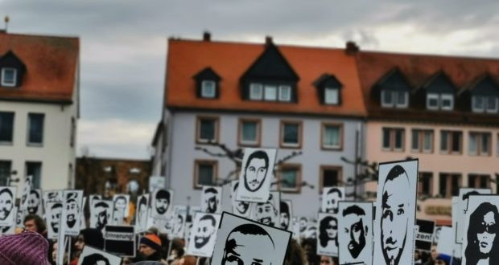
Frankfurt | 20.02.2023 | On 19 February 2020 in Hanau, 9 people were massacred in the third year of the attack. Numerous anti-fascist institutions and persons participated in the action held in Hanau on 19 February on February 18th.
On 18 February, Hundreds of anti -fascists held in Frankfurt took part in the YDG, new woman and Atik. Although the permission was obtained bypolis tried to be blocked by the tense moments were experienced. The march attracted to the fact that the audience in the country was accompanied by applause or to support the action by accompanying the slogans. The action started in Frankfurt Hauptwache and then ended with a rally in Bornheim.
Yesterday(Sunday, February 19)In the call of the platform formed after the massacre, many institutions, organizations and individuals participated in the Marktplatz. Foreign currencies with paintings of the massacres were moved. The family and those who were subjected to racist attacks in different fields were emotional moments, while the 3 years over the massacre is important that it is important that it is important to be forgotten and that the real responsible people should not be inframed.
Then the activists who started the march stopped in the close beer where the massacre took place and counted the names of the massacres and blew the balloons where their names were written and made a silence. They shouted slogans for frequently enthusiastic action for the police, "Where were you in Hanau in Hanau", "Our Response to the State and the Nazis Eleleba".
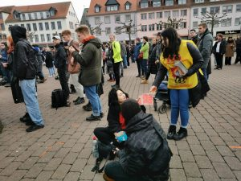
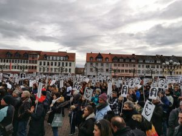
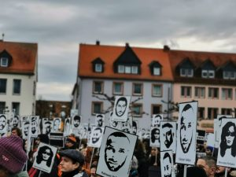
News Source: https://www.atik-online.net/blog/hanauda-binler-devlet-ve-naziler-elele-buna-cevabimiz-muecadele-dedi
Vienna; HANAU DO NOT FORGET!Don't forget!
Author: ['muhabirhasan']
Time: 2023-02-20T89:00:00-04:00
Description: Vienna | 20.02.2023 | Commemoration event was held on Sunday, February 19 at 14:00 at YPPENPLATZ ....
Images: ['HANAU3-620x330.jpg']
Categories: ['Avrupa', 'Haberler', 'Manset']
Type: article
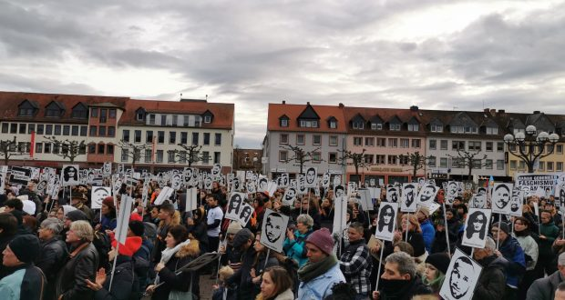
Vienna | 20.02.2023 | On Sunday, February 19, YPPENPLATZ was commemorated at 14:00. Even though the speeches made in the commemoration event, we will not forget, even if we will not forget. Anger, sadness and pain will not listen.
Although 3 years have passed, the justice, explanations and demands of relatives and survivors remained unanswered. The full illumination of the night of the crime is continued with various excuses. German state institutions may want to forget this racist, but we will never forgive, we will never come!Let us grow the struggle and solidarity for justice for those who have been murdered with this racist attack, their families and relatives for those who remain in the delusion. Racismhep was said to say no together and the commemoration activity was terminated.
News Source: https://www.atik-online.net/blog/viyana-hanau-unutma-unutturma
Solidarity activities with Turkey and Kurdistanites damaged in the Earthquake in Austria Innsbruck.
Author: ['muhabiranil']
Time: 2023-02-20T91:00:00-04:00
Description: Austria | 20.02.2023 | Austria Innsbruck'da damaged by the earthquake in Turkey and Kurdistanis
Images: ['unnamed-4-620x330.jpg', 'unnamed-3-781x1024.jpg', 'unnamed-1-771x1024.jpg', 'unnamed-1-75x100.jpg', 'unnamed-2-78x100.jpg', 'unnamed-3-76x100.jpg', 'unnamed-4-100x93.jpg', 'unnamed-100x51.jpg']
Categories: ['APP', 'Avrupa', 'Haberler', 'Manset']
Type: article
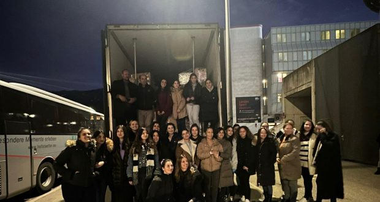
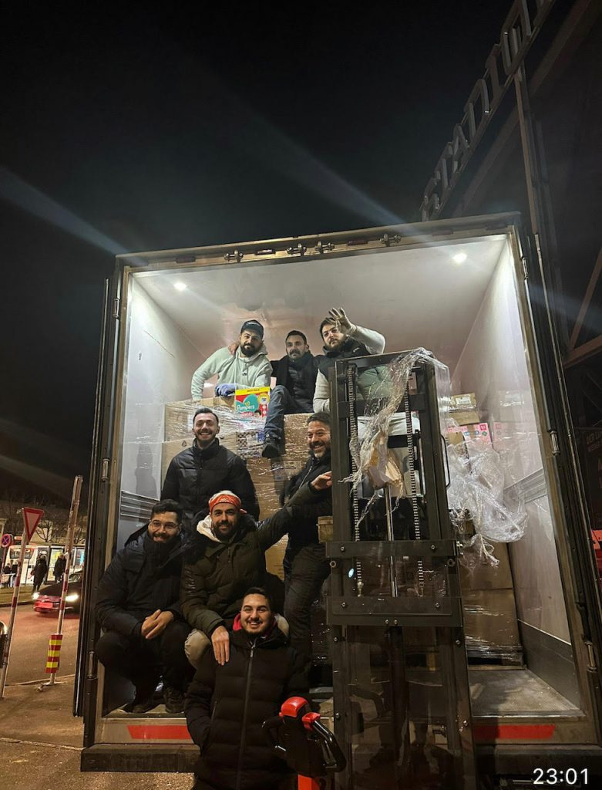
Austria | 20.02.2023 | Solidarity with Turkey and Kurdistanis who suffered in the Earthquake in AustriaınnsBruck.
On the morning of February 6, we woke up with bitter news from Turkey-Kurdistan. In the last heroes, the painful consequences of natural disaster emerged. It was not possible to remain against these news. In Innsbbruck, we interviewed a certain segment and made a DKÖ meeting as the Atik Committee in order to jointly cooperates. In our meeting, each institution appeared to have its own original donation campaign. We had a common idea with the Atik Committee and friends from ADHK.
At the same time, after the demand from young people in Turkey - Kurdistan, after the earthquake disaster, youth in the region, such as how we can intense the topics of the subject was discussed.
A initiative was created by the youth and the municipal council members were made. Following the meeting, the proposal of the municipality to help the earthquake zone and the proposal of Zeliha Aslan and Mesut Onay from Ali Group were presented to the municipal council. The proposal was accepted under the Municipal Assembly of the Municipal Assembly and then the Youth Initiative organized a meeting. Approximately 15 young friends were thought of. The widest segment was informed of the aid of the youth initiative and the call was made through the virtual world.
A central collection place offered by the municipality was determined. Again, the Innsbbruckbelediyesi gave the issue that he would assume the expense of three trucks to carry the region.
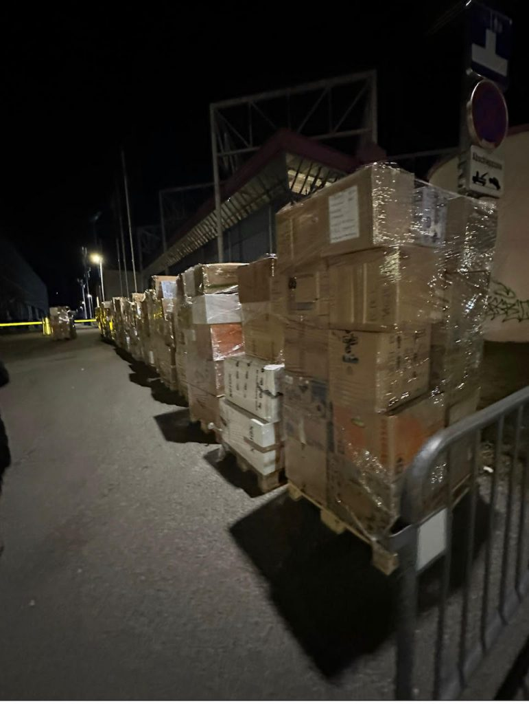
On the first day at 08:00, we tashelored and organized 50 young campaigns for about 5 days. All traditions were checked and packaged one by one. He was only paid new items. Until the last day, more than 20 tons of items were collected. All incoming belongings were listed and loaded into the trucks and sent with a ceremony. Politicians from the State Vebelediye Assembly attended the ceremony.
Joint work with Atik Committee and ADHK.The lahmacun day was organized as two institutions.
On February 19, 5 € Lahmacun was sold. Approximately three thousand euros income was obtained.
Atik Committee, Anti Fa and Demkurd.
Anti FA and Atik Committee in Innsbruck were gathered with dem Kurd and discussed the discussion on what should be made. In the discussion, the decision to open a booth and collect donations in the city center on February 18th.
Secondly, Sinama is a movie show. Friends for this organization. This campaign would be hewa soabağış for solidarity with the earthquake victims in Rojava. In the study, which was carried out up to 10:00 in the evening at 18:00, 4,000 € ’Yayukın money was collected.
News Source: https://www.atik-online.net/blog/avusturya-innsbruckda-depremde-zarar-goeren-tuerkiye-ve-kuerdistanlilarla-dayanisma-etkinlikleri
Dutch company and government, criticized for its role in aerotropolis construction
Author: Philippine Revolution Web Central
Publish Time: 2023-02-20T92:00:00-04:00
Modified Time: None
Description: The Global Witness organization criticized the government and two Dutch companies for accepting and funding it to part of the San Miguel Corporation Aerotropolis project. In the statement that i
Images: ['pamalakaya-opposes-aerotropolis.jpg']
Categories: ['Enivronment', "People's Struggles"]
Type: article
 The Global Witness organization criticized the government and two Dutch companies for accepting and funding it to part of the San Miguel Corporation's Aerotropolis project. In a statement issued by the group on February 2, it said the two companies are set to earn a profit in a project that violates human rights and environmental degradation. Anglobal Witness is an international organization that conducts investigations to address climate justice and defend the human-based people,
The Global Witness organization criticized the government and two Dutch companies for accepting and funding it to part of the San Miguel Corporation's Aerotropolis project. In a statement issued by the group on February 2, it said the two companies are set to earn a profit in a project that violates human rights and environmental degradation. Anglobal Witness is an international organization that conducts investigations to address climate justice and defend the human-based people,
In 2018 Royal Boskalis Westmninster NV Company has a contract that costs 1.5 billion euros for dredging work - the first step of the giant Aerotropolis project or New Manila International Airport. Atradius Dutch State Business in May2022. The project is set up in Taliptip, Bulacan.
About 700 families were forced to evacuate the area after the soldiers dumped the target areas of the project. Because of the fear and fearlessness of the soldiers, they were forced to demolish their homes and sign the documents that stated that they would not oppose the project. Almost half of them promised to compensation had not been accepted today.
Aerotropolis will damage the area recommended by both the states of the Philippines and The Netherlands to be declared "strictly protected." It will destroy Manila Bay, a biodiversity hotspot.
"Boskalis earns a project that is not passed on environmental and social standards," the global witness said. “(H)It does not listen to the warnings of studies on the impact on the environment and society, it has benefited from explicit military threats to the community that are evacuated… ”the group is calling for new rules to prevent the abuse of companies.The Global Witness insisted on the observance of the existence of strong guidelines for European companies against the dedication of them in violation of human rights and environmental destruction.
News Source: https://philippinerevolution.nu/angbayan/kumpanya-at-gubyernong-dutch-tinuligsa-sa-papel-nito-sa-konstruksyon-ng-aerotropolis/
In London, ‘the state is killing not an earthquake’ action
Author: ['muhabirhasan']
Time: 2023-02-20T93:00:00-04:00
Description: London | 20.02.2023 | Hundreds of people in London commemorate those who lost their lives in the earthquake by burning candles, D ...
Images: ['londra-deprem-4-620x330.jpg', 'londra-deprem-3-300x201.jpg', 'londra-deprem-4-1-300x225.jpg', 'londra-deprem-5-300x201.jpg', 'londra-deprem-1-300x201.jpg', 'londra-deprem-2-300x201.jpg']
Categories: ['Avrupa', 'Haberler', 'Manset']
Type: article
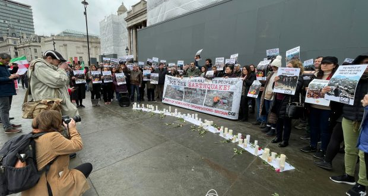
London | 20.02.2023 | Hundreds of people in London commemorated my people who lost their lives in the earthquake, while the earthquake protested the fascist Turkish state.
The British Union of Democratic Power, which has made a dense effort to wounds the wounds of Maraş -based earthquake for days with solidarity networks(DGB)Hundreds of people met at Trafalgar Square on Saturday, February 18th.
A 2 -minute respect for those who lost their lives in the Earthquake in the action of the British Democratic Power Union, which was also the component of the Atik London Committee, was made. The fact that the stance of respect was not one but two minutes was made in accordance with the fascist TCDevlet not intervening in the earthquake and caused hundreds of people to live from cold.
Oktay Şahbaz and Apo Toprak read the statement on behalf of DGB. In a statement, the hunger of tens of thousands of people, the hope of life, the body of their loved ones under the snow, the food needs of the people for days, and the fact that the thousands of funerals still under the underlying of the Erdogan and the government of these realities were emphasized.
In the DGB statement, the following was recorded: “They must be afraid!They should be very scared!Because the families of those who lost their lives, the working class, students and more quantitatives, we will not accept it. We will not give this to us again. You are the architects of this disaster; It is time to end the disaster, destruction and nightmare that has been going on for 12 years. ”
Philip Glanville, the Mayor of Hackney, who participated in the event, did not talk about ‘solidarity’ and emphasized the importance of the struggle. The Budak of the Kurdish People's Assembly pointed out that the Turkish state has carried out a policy of emigrating the Alevis into a greater disaster, and said, ız We will not leave our lands, ”he said.
After the speeches, the action and commemoration ended. ****
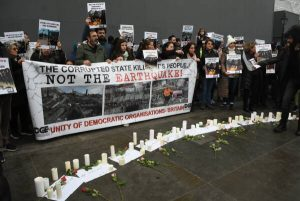
ANF Images
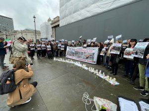
ANF ImagesANF Images
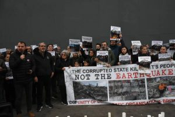
ANF Images
News Source: https://www.atik-online.net/blog/londrada-deprem-degil-devlet-oelduerueyor-eylemi
Those who were massacred in Hanau were commemorated in Hannover
Author: ['muhabirhasan']
Time: 2023-02-20T95:00:00-04:00
Description: Hannover | 20.02.2023 | The racist/fascist attack on 19 February 2020 in Hanau, Germany ...
Images: ['Hannover-620x330.jpg']
Categories: ['Avrupa', 'Haberler', 'Manset']
Type: article
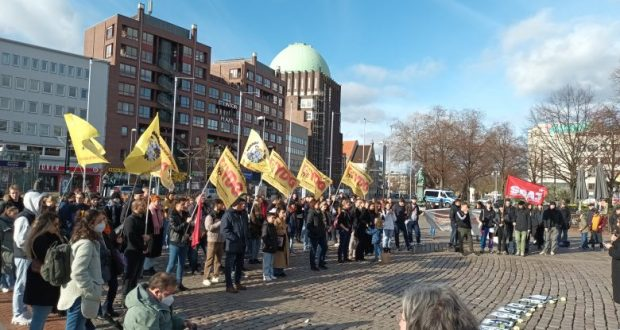
Hannover | 20.02.2023 | 9 people who were massacred in Hanau, Germany on February 19, 2020, were killed in Hannover.
9 people who were murdered 3 years ago as a result of a racist/fascist attack in Hanau were commemorated by many institutions, including Hannover, and many institutions, including the YDG.
Many institutions made many institutions in the commemoration that started with a minute of silence for the massacred. In the speeches, it was stated that the attack is a product of the racist policy of the state, where the attack was wrong as an individual attack.
Commemoration was terminated with slogans after the emphasis on the importance of the common struggle against fascism.
News Source: https://www.atik-online.net/blog/hanauda-katledilenler-hannoverda-anildi
Electricity, 2 other 49th IB soldiers, killed in the NPA action
Author: Philippine Revolution Web Central
Publish Time: 2023-02-20T96:00:00-04:00
Modified Time: None
Description: Three soldiers of the 49th IB were killed in a demolition operation of the New People's Army (NPA) -Albay on February 15 in Barangay Ramay, Oas, Albay. Such unit of 49th IB is operating
Images: ['negros_to-1024x502.jpg']
Categories: ["People's War"]
Type: article
 Three soldiers of the 49th IB were killed in the Demolition Operation of the New People's(BHB)-Albay on February 15 in Barangay Ramay, Oas, Albay. The 49th IB's unit has been operating and sowing fear of remedies since February 13.
Three soldiers of the 49th IB were killed in the Demolition Operation of the New People's(BHB)-Albay on February 15 in Barangay Ramay, Oas, Albay. The 49th IB's unit has been operating and sowing fear of remedies since February 13.
According to a NPA report, they hit the 49th IB troop after residents reported the operation of the soldiers in the area. GUMUGUNTHING COMMAND-DETONATED EXPLOSIVES UNDER(CDX). Kinilala ang mga napatay nasundalo bilang sina 2Lt. Nico Malcampo, SSgt. Aldrin Valuager, at Pvt. NiloVillarez Jr. Liban sa kanila ay mayroon pang ilang nasugatang mga sundalo.
Ang CDX ay armas pandigma na pinahihintulutan sa ilalim ng mga internasyunalna batas sa digma, taliwas sa ipinakakalat ng Armed Forces of the Philippines(AFP). Katangian ng CDX na gamit ng BHB na sumasabog lamang kapag sadyangi-detonate ng blaster. Pinahihintulutan ang klase ng eksplosibo sa OttawaTreaty.
Matapos ang armadong aksyon at kabiguan ng 49th IB, pinagbalingan nito nggalit ang mga residente sa magkakanugnog na barangay sa bayan ng Oas. Binugbogng mga sundalo ang isang sibilyan sa Barangay Bangyawon. Ang mga residente atmagsasaka sa Barangay Bangyawon, Ramay, at Mayag ay pinagbawalan din namagkopra at magpastol ng kanilang hayop. Nagdulot ng labis na takot atpagkaantala sa kabuhayan ang naturang operasyong militar.
Samantala, pinarangalan ng BHB-Albay si Eric Veraquit (In Nene)to martyrous Action of the NPA. He came from Villasocorro, Libmanan, Camarinessur.
News Source: https://philippinerevolution.nu/angbayan/tinyente-2-pang-sundalo-ng-49th-ib-napatay-sa-aksyon-ng-bhb/
Stuttgart Seed Culture Association 22. General Assembly took place
Author: ['muhabirberkay']
Time: 2023-02-20T97:00:00-04:00
Description: Stuttgart | 20.02.2023 | Stuttgart Seed Culture Association of Atiif 22. General Assembly Sunday, February 19
Images: ['signal-2023-02-20-112704_007-620x330.jpeg', 'signal-2023-02-20-112704_007-100x75.jpeg', 'signal-2023-02-20-112704_006-100x75.jpeg', 'signal-2023-02-20-112704_005-100x75.jpeg', 'signal-2023-02-20-112704_004-100x75.jpeg', 'signal-2023-02-20-112704_003-100x75.jpeg', 'signal-2023-02-20-112704_002-100x75.jpeg']
Categories: ['Avrupa', 'Haberler', 'Manset']
Type: article
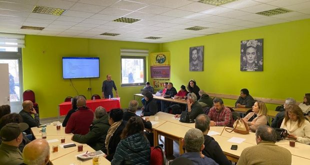
Stuttgart | 20.02.2023 | Stuttgart Seed Culture Association affiliated to Atiif 22. General Staff took place on Sunday, February 19. Following the opening speech, congress was launched with the delegation determination. After ensuring the delegation in the delestor, the 21st Board of Directors read political perspectives and a 2 -year activity report. After the recited perpental article and the activity of the activity, the deficiencies were revealed and suggestions were made for the valuable process. After the discussions, he read the audit establishment. Finally, financial report was presented in the first part. The financial report was approved by the delegates. In the second part, the new administration was appointed. Finally, with the wishes and wishes, the General Assembly was successful.
News Source: https://www.atik-online.net/blog/stuttgart-tohum-kueltuer-dernegi-22-genel-kurulu-gerceklesti
NPA operation, success
Author: Philippine Revolution Web Central
Publish Time: 2023-02-20T98:00:00-04:00
Modified Time: 2023-02-20T15:05:00+00:00
Description: The partisan operation was successfully launched today, February 20, of the Santos Binamera Command (NPA-Albay) in Barangay Cotmon, Camalig. Two 31st IBPA soldiers shopping at Talipapa
Images: ['npa-albay-map-1024x576.png']
Categories: ["People's War"]
Type: article
 Partisan operations launched today, February 20, Ngsantos Binamera Command(Npa-albay)In Barangay Cotmon, Camalig.
Partisan operations launched today, February 20, Ngsantos Binamera Command(Npa-albay)In Barangay Cotmon, Camalig.
Two 31st IBPA soldiers shopping in the village of the village were attacked by red partisans around 7:20 am. The PFC Mark June Esico and PFC John Dave Adcolin are immediately announced that both of the Sabarangan Sabarangay Sabarangay Sabarangay Sabarangay Sabarangay Sabarangay Sabarangay Sabarangay Sabarang Sabarang Sabarang Sabarang Sabarang Sabarang Said Naturan Ding Bayan. They were seized a .45 pistol.
The operation is part of the NPA's penalty campaign in AFP units and other state agents involved in serious violations of human rights. The 31st IBPA which includes two targeted soldiers is responsible for many fascist crimes against the people of Albay, Sorsogon and Masbate.
It is also part of the ongoing celebration of the revolutionary movement of the Salevolutionary memory and the legacy of Comrade Jose Maria Sison.
News Source: https://philippinerevolution.nu/statements/operasyong-partisano-ng-npa-sa-albay-matagumpay/
NPA launches successful operation
Author: Philippine Revolution Web Central
Publish Time: 2023-02-20T99:00:00-04:00
Modified Time: 2023-02-20T15:04:56+00:00
Description: The partisan operation launched today, February 20, The Santos Binamera Command (NPA-Albay) successfully launched a partisan operation today, February 20, at Barangay Cotmon, Camalig.Two soldiers
Images: ['npa-albay-map-1024x576.png']
Categories: ["People's War"]
Type: article
 The partisan operation launched today, February 20, The Santos BinameraCommand(Npa-albay)successfully launched a partisan operation today, February20, at Barangay Cotmon, Camalig.
The partisan operation launched today, February 20, The Santos BinameraCommand(Npa-albay)successfully launched a partisan operation today, February20, at Barangay Cotmon, Camalig.
Two soldiers of the 31st IBPA who were buying supplies at the local market ofsaid barangay were ambushed by Red partisans around 7:20 in the morning. PFCMark June Esico and PFC John Dave Adcolin who were both part of the securitydetail of the infrastructure project of Centerways Construction in BarangaySulong of the said town were killed-in-action. A 45 caliber pistol was seizedfrom them.
The operation is part of the NPA's punitive campaign against AFP units andother state agents involved in gross human rights violations. The 31st IBPAwhere the two soldiers belong to is responsible for numerous fascist crimesagainst the people of Albay, Sorsogon and Masbate.
It is also part of the revolutionary movement's ongoing tribute to therevolutionary memory and legacies of Comrade Jose Maria Sison.
News Source: https://philippinerevolution.nu/statements/npa-launches-successful-operation/
We miss our Partizan, we take its struggle as an example | Hüseyin Şenol
Author: ['muhabirberkay']
Time: 2023-02-20T99:00:00-04:00
Description: Two years have passed since our Partizan lost his life… Dursun Çaktı's ...
Images: ['huseyin-senol-dursun-cakti-620x350-1-620x330.jpg']
Categories: ['Avrupa', 'Haberler', 'Köşe Yazıları', 'Manset']
Type: article
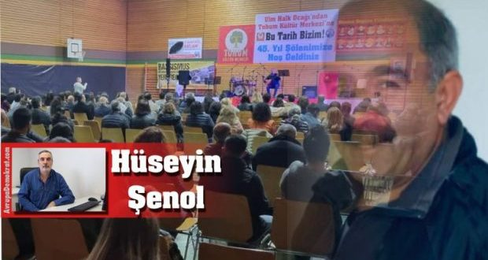
####### Two years have passed since the death of our Partizan… Dursun Çaktı's legacy left to us; D We must be a must for the emocratic mass organization to settle in all areas…
On February 25, two years ago, we continue to commemorate Dursun Çaktı, Partizan, who we lost at the age of 65, and we will constantly commemorate.
In order not to forget and forget Him and that he left us; We will constantly make the revolutionary stance, democratic way of working, coating and ownership. We will continue to stand in the “same” areas to maintain its legacy and to stop.
Founder of Germany Federation of Turkish workers(ATİF)Tohum Culture Center operating(Tkm)His share was very big in my member of ULM. Even though I am a member after his death, it has a lot to share in this. He was an important person who opened the TKM to the use of revolutionaries. The panel we organized made great efforts to make the interviews intensely participated. In these meetings, he was found in person, and he would not relieve his opinion.
…
Maybe it will be a little again but, I have been wishing for two yearsI want to share my feelings again by expanding them further. He deserves much more.
He was 6-7 years older than me. 40 years ago, the age difference seemed very much, and then the occasion was narrowed over the years. But he was always our guiding comrade. And he was so humble that he would say to me and other loved ones, regardless of his life.
It was too early, my comrade.
I have lost my feelings in recent days “Your absence will create a great deficiency. But to the rate we protect the legacy, this deficiency will be reduced to the width, and we know that. ” I said. I even said less.
Death anniversary to the same days(28.02)Yaşar Kemal Negüzel, our famous writer, said: “Human is not as much as the body in the universe, but as much as the heart.” Busöz was most good for Dursun Çaktı. The size was not great, but it would cover the whole area with his heart. So it was so wide and huge.
…I would argue with him the most, and of course we have raised our voices in these discussions, of course, but one day we didn't stop. It was impossible to be able to be a proclaimed while discussing. He was theoretical. He was more knowledgeable than all of us and was constantly making herself. He never chose to crush in the debate, he did not break his style. He was a tremendous example for “war in principles, revolutionary morality and attitude”.
I was seven years younger than him, but he would call me brother. He would say to everyone in his brother. However, he was all of us.
Nowadays, I am working more of Kosovo. February 17, the anniversary of the independence, February 28, the mandel of Kosovo Adem Demaci's birthday, March 7, the massacre of Ademjashari and the ongoing colonial Serbia's provocations… And again as I have many issues, my companion comes to mind. “Kosovo, Albania and the surrounding area of a trip-internal tour set up. Because it was close to the all -regions and peoples of the world. You can understand, in fact, more than a tour conversation, my interest in my interest, Albanian formation and the issue did not work all the time. So it was supported by his attitude. I would love to have these regions with him and talk to my Internationalist comrade…
He was in all areas of life. It was in the most foreword of the solidarity movement with the peoples of Turkey. He was at the beginning of the struggle for rights arising from being an immigrant and minority. He gave importance to the trade union struggle and the peace of peace from the working class struggle. As well as the elections in Turkey, the elections in Germany were active.
He took part not only in Ulm streets, squares and halls, but also in events in many countries and cities of Germany and Europe.
When we sold newspapers, magazines and tickets, we would love it to be there and we would give it to the one. He didn't turn it down once, and he would have made a great effort for everyone to get it. If there is no one, it would be 4-5 units, not one or two of the tickets.
Yes, he was very humble, that was modest, he would listen, he would ask, but he would not understand, but he would not make concessions from the revolutionary principles.
…
When we first heard about the illness 4-5 months before his death, we were not ‘heavy’. How would we say? "I don't even use a single pill, I don't have any disasters," he always said.
We learned that the pancreas.
We were badly destroyed.
He was trying to give us morale.
Then we heard that not only the pancreas.We've been destroyed much more and we've been waiting together.
It was also a problem that it coincided with the coronavirus epidemic. We couldn't visit him. It was the end of short telephone conversations.
He was one of those who did not deserve this environment at all. Now he is uncomfortable, but we could not visit him, we could not chat for a long time.
Since I understand a little graph, the banners of banners were asked to make the declarations rockets. At that moment my father's word came to my mind; "Wedding will not wait," he would say.
The most beautiful of the visual, the best man wants to do. But it was one of my graphic work. I could not make death. He died immediately at that time, so that people would not be shocked, I sent it to the night poster, badge, banners and papers. I am afraid of "those who pass through the up first." I said it; I couldn't put it in death.
On the one hand, we were already brutally because we could not go and see. I was constantly thinking about the same situation and in the funeral.
He had condolences at the Seed Culture Center for three or four days and hundreds of people were gathered in and in the association every day. Condolences were being announced in the meantime, “Please do not Uzunkal not, let's give priority to those coming from outside the city…”. Social distance was drawn attention.
Before the funeral, I said in my article: “Tomorrow commemoration and funeral ceremony is in the central cemetery of Ulm. 100 people are forbidden. Napalım, we overcome the face, but it will be there in the name of thousands 100 and above… ”. And I was wrong. Despite all the other, there was more than 700 participation. Despite the corona and the warnings of “Do not external”, this crowd. We found thousands of thousands at a normal time.
For now, I'm putting a comma for now.
Democratic Mass Organization
At the beginning of my article; One of the largest of our membership in Tohum Culture Center is the approach of the comrade of the comrade, the “glue” function that he sees for the unity of the revolutionaries and for his rapprochement.
The 47th General Assembly of the Seed Association, which we realized recently and where I was a member of the third time, was held. The association continues to give her fruits after her death. In the last one or two years, the number of the association has increased considerably. Most importantly, different, new members are revolutionary-democratic and patriots from different traditions.In this congress, I was very happy that two of our friends from different traditions declare that they will be members of the activist, while the fact that the constantly developing plague association was on the way to the organization of democratic mass organizations for the future gave great hope.
Democratic mass organization that will be the subject of another writing-writers(DKO)On it, years later, an important source of inspiration and developments Biritohum Cultural Center. Darisi, the head of Germany and Europe.
The settlement of the democratic and socialist mode of democracy in every field should never be compromised. This is the most important style that will dabel the success of our struggle.
Dursun Çaktı's legacy left to us; It should be a must for the democratic mass organization to settle in all areas…
…
Yes, two years have passed since we sent off our Partisan to eternity. But Oher will continue to live in our struggle. We will always remember, we will continue Him, we will tell the future generations.
Dursun Çaktı, on the way to the whole revolutionary-democratic and patriotic spectrum, brought together, he always did what he did to us once again. Revolutionary Certainly, this year, in the coming years, this will continue.
He wasn't a groupman. He served as a glue.
He was literally comrade, my comrade.
Our word to you is revolution and socialism.
We miss you, my Revolutionary-Socialist Internationalist comrade.
My Comrade Partizan, we will continue to keep you alive in our struggle…
Hüseyin Şenol - 20.02.2023
News Source: https://www.atik-online.net/blog/partizanimizi-oezlueyor-muecadelesini-oernek-aliyoruz-hueseyin-senol
PC February 20 - War censorship: journalists accused of being collaborators of the enemy
Author: LuigiLerisVIVE
Description: Italian journalists blocked in the Ukraine "Democratic" while Meloni goes to Zelensky's Nazi government to do business on behalf of ...
Time: 2023-02-21T00:20:00+01:00
Images: ['sceresini-bosco-giornalisti-italiani-ucraina.jpg', 'FpZUItYWAAMKcGN.jpeg']
Italian journalists blocked in the Ukrainian "Democratic" while Meloni goes to the Nazi government of Zelensky
to do business on behalf of the masters
 A tweet by Alberto Negri: The print ignores the Journalists blocked Inucraine
A tweet by Alberto Negri: The print ignores the Journalists blocked Inucraine
Zelenski has granted interviews waiting to receive Meloni: none(If there are exceptions report them)He asked questions or a nod to the Colleghisceresini and Bosco blocked for weeks in Kiev. The level is this
from www.ossisserorepression.info%2fgiornalisti-Italiani-Bloccati-Censurati-Alle-Autorita-Ucraine

News Source: https://proletaricomunisti.blogspot.com/2023/02/pc-20-febbraio-censura-di-guerra.html
.jpg)


{kind=link}
{kind=link}
{kind=link}
{kind=link}
.jpg){kind=link}
{kind=link}
{kind=link}
{kind=link}
{kind=link}
{kind=link}
{kind=link}
{kind=link}
{kind=link}
{kind=link}
{kind=link}
{kind=link}
{kind=link}
{kind=link}
{kind=link}
{kind=link}
{kind=link}
{kind=link}
{kind=link}
{kind=link}
{kind=link}
{kind=link}
{kind=link}
{kind=link}
{kind=link}
{kind=link}
{kind=link}
{kind=link}
{kind=link}
{kind=link}
{kind=link}
{kind=link}
{kind=link}
{kind=link}
{kind=link}
{kind=link}
{kind=link}
{kind=link}
{kind=link}
{kind=link}
{kind=link}
{kind=link}
{kind=link}
{kind=link}
{kind=link}
{kind=link}
{kind=link}
{kind=link}
{kind=link}
{kind=link}
{kind=link}
{kind=link}
{kind=link}
{kind=link}
{kind=link}
{kind=link}
{kind=link}
{kind=link}
{kind=link}
{kind=link}
{kind=link}
{kind=link}
{kind=link}
{kind=link}
{kind=link}
{kind=link}
{kind=link}
{kind=link}
{kind=link}
{kind=link}
{kind=link}
{kind=link}
{kind=link}
{kind=link}
{kind=link}
{kind=link}
{kind=link}
{kind=link}
{kind=link}
{kind=link}
{kind=link}
{kind=link}
{kind=link}
{kind=link}
{kind=link}
{kind=link}
{kind=link}
{kind=link}
{kind=link}
{kind=link}
{kind=link}
{kind=link}